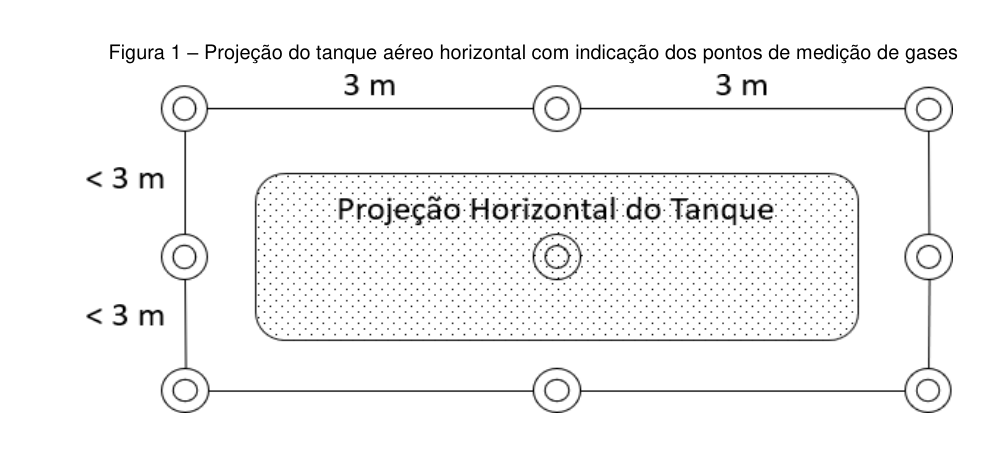
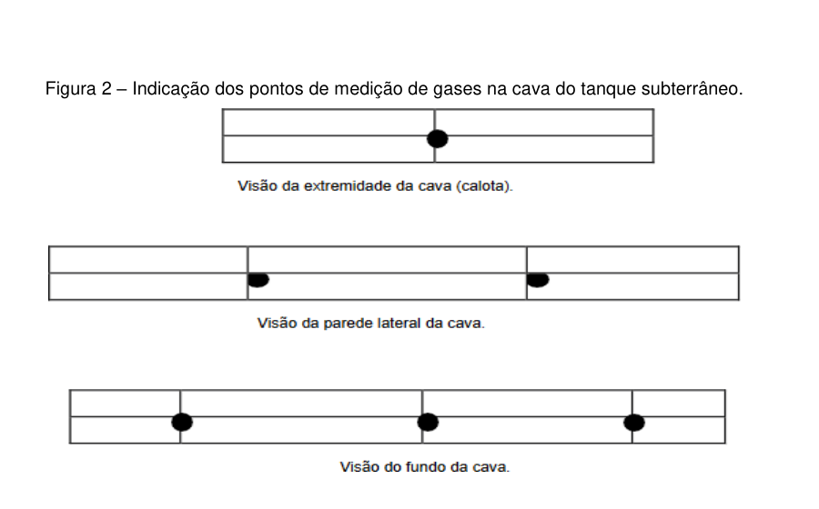

Instrução Normativa IAT nº 28, de 10 de setembro de 2026
Súmula: Estabelece definições, critérios, diretrizes e procedimentos, para o licenciamento ambiental de Posto Revendedor, Ponto de Abastecimento, Instalação de Sistema Retalhista de Combustível – TRR, Posto Flutuante, Base de Distribuição de Combustíveis.
Preâmbulo
O DIRETOR-PRESIDENTE do INSTITUTO ÁGUA E TERRA, nomeado pelo Decreto Estadual nº 13.433, de 23 de abril de 2026, no uso de suas atribuições que lhe são conferidas pela Lei Estadual nº 10.066, de 27 de julho 1992, Lei Estadual nº 20.070, de 18 de dezembro de 2019, Decreto Estadual nº 3.813, de 09 de janeiro de 2020 e Decreto Estadual nº 11.977, de 16 de agosto de 2022, e
Considerando a Lei Estadual nº 22.252, de 12 de dezembro de 2024 que dispõe sobre normas gerais para o licenciamento ambiental no Estado do Paraná, e dá outras providências;
Considerando o Decreto Estadual nº 9.541 de 10 de abril de 2025, que regulamenta a Lei Estadual nº 22.252, de 12 de dezembro de 2024 que dispõe sobre normas gerais para o licenciamento ambiental no Estado do Paraná;
Considerando a necessidade de dar efetividade ao "princípio da prevenção" consagrado na Política Nacional do Meio Ambiente - artigo 2º, incisos I, IV e IX da Lei Federal nº 6.938, de 31 de agosto de 1.981 e na Declaração do Rio de Janeiro de 1992 (Princípio nº 15);
Considerando o disposto na Resolução CONAMA nº 237, de 19 de dezembro de 1997, que dispõe dos procedimentos e critérios utilizados para o licenciamento ambiental;
Considerando o disposto na Resolução CONAMA nº 273, de 29 de novembro de 2000 com suas respectivas alterações, que estabelece diretrizes para o licenciamento ambiental de postos de combustíveis e serviços, como postos revendedores, postos de abastecimento, instalações de sistemas retalhistas e postos flutuantes;
Considerando o disposto na Resolução CONAMA nº 362, de 23 de junho de 2005 e com suas respectivas alterações, sobre o recolhimento, coleta e destinação final de óleo lubrificante usado ou contaminado;
RESOLVE
Art. 1º
Estabelecer requisitos, critérios, diretrizes e procedimentos para o Licenciamento Ambiental de Posto Revendedor, Ponto de Abastecimento, Instalação de Sistema Retalhista de Combustível – TRR, Posto Flutuante e Base de Distribuição de Combustíveis.
CAPÍTULO I DOS EMPREENDIMENTOS DE ABASTECIMENTO E ARMAZENAMENTO DE COMBUSTÍVEIS
Art. 2º
Para fins desta Instrução Normativa, consideram-se os seguintes empreendimentos de abastecimento e armazenamento de combustíveis:
I
base de distribuição de combustíveis ou estabelecimento de distribuição de combustíveis líquidos: estabelecimento matriz ou filial onde exista instalação de armazenamento e de distribuição de combustíveis líquidos, contrato de cessão de espaço em instalação de armazenamento ou contrato de carregamento em ponto de entrega no produtor de derivados de petróleo ou de biocombustíveis;
II
instalação de sistema retalhista – ISR: instalação com sistema de tanques para o armazenamento de óleo diesel, e/ou óleo combustível, e/ou querosene iluminante, destinada ao exercício da atividade de Transportador Revendedor Retalhista – TRR;
III
ponto de abastecimento – PA: instalação que possua equipamento e sistemas para o armazenamento de combustível automotivo, com registrador de volume apropriado para o abastecimento de equipamentos móveis, veículos automotores terrestres, aeronaves, embarcações ou locomotivas, cujos produtos sejam destinados exclusivamente ao uso do detentor das instalações ou de grupos fechados de pessoas físicas ou jurídicas, previamente identificadas e associadas em forma de empresas, cooperativas, condomínios, clubes ou assemelhados;
IV
posto flutuante – PF: toda embarcação sem propulsão empregada para o armazenamento, distribuição e comércio de combustíveis que opera em local fixo e determinado;
V
posto revendedor – PR: instalação onde se exerça a atividade de revenda varejista de combustíveis líquidos derivados de petróleo, álcool combustível e outros combustíveis automotivos, dispondo de equipamentos e sistemas para armazenamento de combustíveis e equipamentos medidores.
CAPÍTULO II DAS DEFINIÇÕES
Art. 3º
Para fins desta Instrução Normativa, consideram-se as seguintes definições:
I
condicionantes: medidas, condições ou restrições sob responsabilidade do empreendedor, estabelecidas no âmbito das licenças ambientais pela autoridade licenciadora, com vistas a mitigar ou compensar os impactos ambientais negativos e potencializar os impactos positivos identificados nos estudos ambientais, devendo guardar relação direta e proporcional com os impactos neles identificados;
II
documento de dominialidade: documento que ateste a propriedade ou posse incontestada em nome do requerente, tais como matrícula do Registro do Imóvel, transcrição imobiliária, escritura pública de cessão de direitos possessórios, declaração dos confrontantes, contrato de locação do imóvel, dentre outros;
III
empreendedor: pessoa física ou jurídica, de direito público ou privado, responsável por atividades ou empreendimentos sujeitos ao licenciamento ambiental;
IV
licenciamento ambiental: procedimento administrativo pelo qual o órgão ambiental competente, verificando a satisfação das condições legais e técnicas, delibera quanto à localização, instalação, ampliação, operação e encerramento de empreendimentos e atividades utilizadoras de recursos ambientais consideradas efetivas ou potencialmente poluidoras ou daquelas que, sob qualquer forma, possam vir a causar degradação e/ou modificação ambiental, considerando as disposições legais e regulamentares e as normas técnicas aplicáveis ao caso;
V
estudos ambientais: são todos e quaisquer estudos relativos aos aspectos ambientais relacionados à localização, instalação, operação e ampliação de um empreendimento e/ou atividade, apresentado como subsídio para a análise da licença requerida, tais como: relatório ambiental, plano e projeto de controle ambiental, relatório ambiental preliminar, diagnóstico ambiental, plano de manejo, plano de recuperação de área degradada e programa de gerenciamento de riscos ambientais;
VI
licença ambiental: o ato administrativo pelo qual são estabelecidas, as condições, restrições e medidas de controle ambiental que deverão ser obedecidas pelo empreendedor, pessoa física ou jurídica, para localizar, instalar, ampliar e operar empreendimentos e/ou atividades utilizadoras dos recursos ambientais, consideradas efetiva ou potencialmente poluidoras ou aquelas que, sob qualquer forma, possam causa degradação e/ou modificação ambiental;
VII
manancial de abastecimento público: bacia hidrográfica situada a montante do local onde exista ou se preveja futuramente realizar a captação de água para abastecimento público;
VIII
modalidade de licenciamento ambiental: tipo de processo administrativo que varia de acordo com a natureza, a localização, o porte e o potencial poluidor/degradador dos empreendimentos e/ou atividades;
IX
Termo de Ajustamento de Conduta - TAC: instrumento que tem por finalidade estabelecer obrigações do compromissário, em decorrência de sua responsabilidade civil, de forma a ajustar a sua conduta às exigências legais, mediante cominações, que terá eficácia de título executivo extrajudicial;
X
Termo de Referência - TR: documento único emitido pelo Instituto Água e Terra - IAT, que estabelece o conteúdo dos estudos a serem apresentados pelo empreendedor no licenciamento ambiental para avaliação dos impactos ambientais decorrentes do empreendimento e/ou atividade;
XI
uso de recursos hídricos: utilização de recursos hídricos ou intervenção em corpo d’água sujeitos a outorga prévia, de direito, declaração de uso independente ou a declaração de uso insignificante de outorga.
CAPÍTULO III DOS ATOS ADMINISTRATIVOS PARA O LICENCIAMENTO AMBIENTAL
Art. 4º
O órgão licenciador competente, no exercício de sua competência de controle ambiental, expedirá, para fins de licenciamento ambiental de Posto Revendedor, Ponto de Abastecimento, Instalação de Sistema Retalhista de Combustível – TRR, Posto Flutuante e Base de Distribuição de Combustíveis os seguintes atos administrativos:
I
Autorização Ambiental - AA: autoriza a execução de obras que proporcionem ganhos e melhorias ambientais, que não acarretem impactos ambientais na sua instalação e operação, bem como autoriza a execução de atividades, pesquisas e serviços de caráter temporário ou obras emergenciais, instalações permanentes que não caracterizem aumento de potencial poluidor/degradador do meio ambiente, expedida de acordo com as especificações constantes dos requerimentos, cadastros, planos, programas e/ou projetos aprovados, incluindo as medidas de controle ambiental e demais condicionantes determinadas pelo órgão licenciador competente;
II
Autorização Florestal - AF: ato administrativo que regulamenta a exploração, corte ou supressão de vegetação nativa, emitido em conformidade com a legislação ambiental vigente, visando assegurar o uso sustentável dos recursos florestais e a preservação ambiental;
III
Declaração de Dispensa de Licenciamento Ambiental - DLAM: concedida de forma automática para os empreendimentos e/ou atividades que são dispensados do
licenciamento por parte do órgão licenciador competente em função de seu baixo potencial poluidor/degradador, conforme os critérios estabelecidos em normativas específicas, sem prejuízo ao Licenciamento Ambiental Municipal;
IV
Licença Prévia - LP: concedida na fase preliminar do planejamento do empreendimento e/ou atividade aprovando sua localização e concepção, atestando a viabilidade ambiental e estabelecendo os requisitos básicos e condicionantes a serem atendidos nas próximas fases de sua implementação;
V
Licença Prévia de Ampliação - LPA: concedida na fase preliminar do planejamento de ampliações ou alterações definitivas nos empreendimentos e/ou atividades detentoras de Licença de Operação - LO ou de Licença Ambiental Simplificada - LAS, que necessitam de licenciamento específico para a parte ampliada ou alterada, aprovando sua localização e concepção, atestando a viabilidade ambiental e estabelecendo os requisitos básicos e condicionantes a serem atendidos nas próximas fases de sua implementação;
VI
Licença de Instalação - LI: autoriza a instalação do empreendimento e/ou atividade de acordo com as especificações constantes dos planos, programas e projetos aprovados, incluindo as medidas de controle ambiental e demais condicionantes, da qual constituem motivos determinantes;
VII
Licença de Instalação de Ampliação - LIA: autoriza a instalação de ampliações ou alterações definitivas nos empreendimentos e/ou atividades detentoras de Licença Prévia de Ampliação - LPA, de acordo com as especificações constantes dos planos, programas e projetos aprovados, incluindo as medidas de controle ambiental e demais condicionantes, da qual constituem motivos determinantes;
VIII
Licença de Instalação de Regularização: concedida para empreendimentos e/ou atividades que estejam em instalação de forma irregular, sem o devido licenciamento ambiental, atestando sua viabilidade ambiental, bem como autorizando sua implantação de acordo com as especificações constantes dos requerimentos, planos, programas e/ou projetos aprovados, incluindo as medidas de controle ambiental, e estabelecendo os requisitos básicos e condicionantes a serem atendidos para a Licença de Operação - LO
IX
Licença de Operação - LO: autoriza a operação de empreendimentos e/ou atividades após a verificação do efetivo cumprimento do que consta das licenças anteriores, com as medidas de controle ambiental e condicionantes determinadas para a operação;
X
Licença de Operação de Ampliação - LOA: autoriza a operação das ampliações ou alterações definitivas nos empreendimentos e/ou atividades, conforme estabelecidas em Licença Prévia de Ampliação - LPA e/ou Licença de Instalação de Ampliação - LIA, após a verificação do efetivo cumprimento do que consta das licenças anteriores, com as medidas de controle ambiental e condicionantes determinadas para a operação;
XI
Licença de Operação de Regularização - LOR: concedida para empreendimentos e/ou atividades que estejam operando de forma irregular, sem o devido licenciamento ambiental, atestando a viabilidade ambiental e estabelecendo os requisitos básicos e condicionantes a serem atendidos, bem como autorizando sua operação de acordo com as especificações constantes dos requerimentos, planos, programas e/ou projetos aprovados, incluindo as medidas de controle ambiental e demais condicionantes determinadas pelo órgão licenciador competente;
XII
outorga: ato administrativo mediante o qual a autoridade outorgante declara a disponibilidade de água para os usos requeridos e faculta ao outorgado o direito de uso de recurso hídrico, por prazo determinado, nos termos e nas condições expressas no respectivo ato.
CAPÍTULO IV DAS MODALIDADES DE LICENCIAMENTO AMBIENTAL
Art. 5º
Para fins desta Instrução Normativa, constituem modalidades de licenciamento ambiental:
I
licenciamento ambiental trifásico: licenciamento no qual a Licença Prévia - LP, a Licença de Instalação - LI e a Licença de Operação - LO do empreendimento e/ou atividade são concedidas em etapas sucessivas;
II
licenciamento ambiental bifásico: licenciamento no qual o empreendimento e/ou atividade não estarão sujeitos a todas as etapas, podendo ser:
a)
licenciamento de ampliações e/ou diversificações do empreendimento e/ou atividade que não impliquem no aumento do seu potencial poluidor e/ou degradador do meio ambiente, no qual a Licença Prévia de Ampliação - LPA e a Licença de Operação de Ampliação - LOA são concedidas em etapas sucessivas, sem a necessidade de Licença de Instalação de Ampliação – LIA;
b)
licenciamento no qual a Licença Prévia - LP e a Licença de Instalação - LI do empreendimento e/ou atividade são concedidas em etapas sucessivas, sempre que não houver necessidade de Licença de Operação – LO.
III
licenciamento ambiental de regularização: licenciamento visando à regularização ambiental de empreendimentos e/ou atividades potencialmente poluidoras/degradadoras, do meio ambiente, em instalação ou em operação, que se enquadrem em uma das hipóteses seguintes:
a)
nunca obtiveram licenciamento;
b)
estejam em funcionamento em desacordo com a licença obtida;
c)
cuja implantação ou funcionamento tenha ocorrido anteriormente à obrigatoriedade do licenciamento ambiental estabelecido em legislação vigente.
IV
licenciamento ambiental de ampliação: licenciamento para ampliações e/ou alterações definitivas nos empreendimentos e/ou atividades detentoras de Licença Ambiental Simplificada - LAS ou Licença Prévia - LP, Licença de Instalação - LI e Licença de Operação que necessitam de licenciamento específico, trifásico ou bifásico, para a parte ampliada ou alterada;
V
autorização: procedimento que gera o ato administrativo discricionário a ser emitido para execução de obras, atividades, pesquisas e serviços não enquadrados nas outras modalidades.
CAPÍTULO V DO ENQUADRAMENTO DO LICENCIAMENTO AMBIENTAL
Art. 6º
A modalidade de licenciamento ambiental para os empreendimentos do art. 2º desta Instrução Normativa é definida conforme os critérios determinados na tabela abaixo:
Tabela I
| Modalidade | Critérios | Tipo de empreendimento |
|---|---|---|
| Dispensa de Licenciamento Ambiental–DLAM | Ponto de abastecimento com instalações aéreas de até 15.000 L de volume total da tancagem destinadas exclusivamente ao abastecimento do detentor das instalações. Não se enquadram nessa modalidade qualquer associação em forma de empresa, cooperativa, condomínio, clube ou assemelhado que comercialize combustíveis em especial para veículos de passeio. | Ponto de Abastecimento com instalações aéreas de até 15.000 L de volume total da tancagem. |
| Licenciamento Trifásico–LP,LI e LO | Empreendimentos ou atividades que não se enquadrem nas modalidades anteriores. | Ponto de Abastecimento, Posto Revendedor, Base de Distribuição, Instalação de Sistema Retalhista – TRR, Posto Flutuante. |
Parágrafo único
A emissão de DLAM não será aplicável a empreendimentos localizados em Áreas de Preservação Permanente – APP, Reserva Legal, áreas
úmidas, Unidades de Conservação de Proteção Integral, zonas ambientalmente restritivas incompatíveis com a atividade ou com necessidade de supressão de vegetação nativa. Nas Áreas de Proteção Ambiental – APA, a emissão poderá ocorrer em áreas urbanas consolidadas ou em zonas compatíveis com a atividade, desde que observadas as disposições do respectivo plano de manejo, zoneamento ambiental e legislação municipal aplicável.
CAPÍTULO VI DA DOCUMENTAÇÃO PARA O LICENCIAMENTO AMBIENTAL
Seção I Da Declaração de Dispensa de Licenciamento Ambiental - DLAM
Art. 7º
A DLAM pode ser concedida ao Ponto de Abastecimento com instalações aéreas de até 15.000 (quinze mil) litros e que sejam destinados exclusivamente ao abastecimento do detentor das respectivas instalações, cuja construção deve atender as normas técnicas brasileiras em vigor, ou na ausência delas, normas internacionalmente aceitas, conforme Resolução CONAMA n.º 273 de 2000.
§ 1º
Ponto de Abastecimento com instalações aéreas de até 15.000 (quinze mil) litros estar vinculado a outros empreendimentos/atividades, tais como industrias, entre outros, o interessado deverá requerer a DLAM e quando da renovação da licença da atividade principal, o ponto de abastecimento deverá ser incorporado no escopo da mesma.
§ 2º
Não se enquadra nesta modalidade, qualquer associação em forma de empresa, cooperativa, condomínio, clube ou assemelhado que comercialize combustíveis em especial para veículos de passeio.
Art. 8º
A construção das instalações aéreas para armazenamento de combustível deve obedecer a ABNT NBR 15776, ou outras que venham a substituir, sendo que
aspectos complementares como localização e distanciamento devem obedecer ao disposto pelas ABNT NBRs 17505, ou outras que venham a substituir.
§ 1º
A pista de abastecimento deve ser dotada de piso impermeável e canaletas de drenagem interligadas à Caixa Separadora de Água e Óleo - CSAO e cobertura.
§ 2º
A área de armazenamento deve ser dotada de bacia de contenção, piso impermeável e válvula de contenção, sendo que a bomba de abastecimento deve, preferencialmente, ser instalada dentro da bacia de contenção. Caso seja instalada fora da bacia de contenção, deve contar com câmara de contenção – sump.
Art. 9º
Os requerimentos para Declaração de Dispensa de Licenciamento Ambiental – DLAM, conforme Capítulo IV, devem ser protocolados por meio do sistema informatizado do IAT, instruídos na forma prevista abaixo:
I
dados e documentação de identificação de empreendedor:
item 1
para pessoa jurídica:
a)
extrato do Cadastro Nacional de Pessoa Jurídica;
b)
cópia do Contrato Social ou Estatuto Social, atualizada com a última alteração.
item 2
para pessoa física:
a)
cópia do Cadastro de Pessoa Física – CPF;
b)
cópia do Registro Geral – RG.
item 3
para representante legal:
a)
cópia do Cadastro de Pessoa Física – CPF do representante legal e do requerente;
b)
cópia do Registro Geral – RG do representante legal e do requerente;
c)
cópia do instrumento de procuração com firma reconhecida ou assinatura digital.
II
Manifestação do Município contendo a identificação do zoneamento urbanístico aplicável à área destinada à implantação do empreendimento, bem como a indicação da legislação urbanística vigente incidente sobre o local;
III
documento válido de comprovação de dominialidade atualizado em 90 (noventa) dias, conforme exigências constantes do Decreto Estadual nº 9.541, de 10 de abril de 2025, que regulamenta a Lei Estadual nº 22.252, de 12 de dezembro de 2024. Se imóvel locado, apresentar contrato de locação ou arrendamento;
IV
declaração do requerente informando que a área a ser licenciada não possui embargos;
V
mapa de situação do empreendimento contendo no mínimo:
a)
limites da propriedade, conforme matrícula do imóvel e condizentes com o Cadastro Ambiental Rural (em caso de imóvel rural);
b)
estruturas físicas;
c)
distância dos corpos hídricos;
d)
áreas de preservação permanente;
e)
áreas de Reserva Legal e maciços florestais remanescentes;
f)
vias de acesso principais;
g)
pontos de referências.
VI
memorial descritivo do empreendimento e de todas as instalações, acompanhado de relatório fotográfico de todos os componentes do Sistema Aéreo de Armazenamento de Combustíveis (SAAC), tais como tanques, tubulações, motobombas, bacias de contenção, área de descarga, área de abastecimento, sistemas de drenagem oleosa (canaletas e CSAO), elaborado por profissional(is) habilitado(s) e acompanhado da(s) respectivas ART(s) - Anotação(s) de Responsabilidade Técnica;
VII
cópia do recibo de inscrição no Sistema de Cadastro Ambiental Rural (SICAR- PR), de acordo com artigo 1º do Decreto Estadual nº 8.680, de 06 de agosto de 2013 e parágrafo 3º do artigo 29 da Lei Federal nº 12.651, de 25 de maio de 2012, para imóveis em área rural;
VIII
Portaria(s) de Outorga Prévia e/ou Declaração(ões) de Uso Independente ou Declaração(ões) de Uso Insignificante de Outorga, em se tratando de empreendimento que necessite de uso de recursos hídricos, superficiais ou subterrâneos;
IX
Declaração do requerente contendo a caracterização da atividade principal exercida no empreendimento, a finalidade operacional do sistema de abastecimento, o perfil dos usuários vinculados à operação e a estimativa de consumo compatível com a atividade desenvolvida, responsabilizando-se pelas informações prestadas e
pela utilização da estrutura exclusivamente nos limites declarados, conforme Declaração de Uso/Finalidade do Combustível Armazenado para fins de DLAM, conforme ANEXO I.
Art. 10º
Deverá ser solicitada à respectiva Licença Ambiental para qualquer alteração nas características do porte do empreendimento.
Art. 11º
A Declaração de Dispensa do Licenciamento Ambiental - DLAM não exime das exigências legais quanto à preservação do meio ambiente.
Art. 12º
O desvio da finalidade operacional declarada no requerimento de DLAM, bem como a utilização da estrutura em desacordo com os critérios de enquadramento previstos nesta Instrução Normativa, sujeitará o empreendimento a responsabilidade administrativa, cível e penal, sem prejuízo da exigência de regularização ambiental pela modalidade de licenciamento aplicável.
Seção II Da Autorização Ambiental – AA
Art. 13º
Os empreendimentos enquadrados no art. 2º poderão solicitar Autorização Ambiental nos seguintes casos:
I
remoção dos tanques de combustíveis ou óleo usado contaminado, por determinação do órgão ambiental ou por solicitação do responsável legal, sem que haja nova instalação de qualquer componente do sistema, independentemente do número de tanques e demais periféricos a serem removidos no empreendimento.
II
substituição dos tanques de combustíveis ou óleo usado contaminado, por determinação do órgão ambiental ou por solicitação do responsável legal, sem alteração da capacidade total volumétrica de armazenamento de combustíveis;
III
demais alterações nas instalações de armazenamento de combustíveis e/ou óleo contaminado e periféricos, sem alteração da capacidade total volumétrica de armazenamento de combustíveis ou aumento do potencial poluidor/degradador do meio ambiente.
Parágrafo único
O procedimento de remoção será aplicável para empreendimento em operação com licença ambiental vigente ou vencida, assim como para empreendimentos que não estejam em operação.
Art. 14º
A Autorização Ambiental – AA para remoção ou substituição, deverá ser requerida por meio do sistema informatizado do IAT, instruídos na forma prevista abaixo:
I
certificado de conformidade emitido pelo INMETRO para a empresa responsável pela remoção e/ou instalação do SASC;
II
projeto executivo da remoção e/ou substituição do SASC de acordo com o Termo de Referência do ANEXO II, elaborado por profissional habilitado, acompanhado da respectiva ART, contendo no mínimo:
a)
metodologia a ser empregada na execução dos trabalhos de acordo com as normas da ABNT – ABNT NBR, sendo que a remoção e destinação dos tanques/equipamentos devem atender o preconizado na norma da ABNT NBR 14973, ou outra que a venha substituir;
b)
planta baixa em escala adequada, com as distâncias entre colunas, tanques (antigos e a instalar) e outras obras civis;
c)
memorial descritivo do SASC a ser instalado (quando for o caso).
III
histórico do SASC a ser removido, contendo data da instalação e dados dos tanques e periféricos a serem removidos;
IV
comprovante de recolhimento da taxa ambiental;
V
termo de ciência (anuência) do proprietário do imóvel/detentor da matrícula.
§ 1º
Após a emissão da Autorização Ambiental, o empreendimento deve comunicar com antecedência o Poder Público Municipal, Corpo de Bombeiros e órgão ambiental competente, sobre os serviços de remoção de SASC e/ou SAAC.
§ 2º
Em até noventa dias após a realização dos trabalhos, o empreendimento deve apresentar Estudo de Fundo de Cava ao IAT, realizado conforme Termo de Referência do ANEXO II, em meio digital.
Seção III Do Licenciamento Trifásico
Art. 15º
Os empreendimentos que necessitam de Licenças Prévia, de Instalação e de Operação, deverão requerê-las sucessivamente.
Parágrafo único
Este procedimento se aplica a novos empreendimentos e aqueles em operação que venham a sofrer ampliações acima do porte, alterações definitivas no processo e incorporação de novas atividades, com alteração das características do empreendimento já implantado.
Subseção I Da Licença Prévia - LP
Art. 16º
Os requerimentos para Licença Prévia – LP, deverão ser protocolados por meio do sistema informatizado do IAT, instruídos na forma prevista abaixo:
I
dados e documentação de identificação de empreendedor:
item 1
para pessoa jurídica:
a)
extrato do Cadastro Nacional de Pessoa Jurídica;
b)
cópia do Contrato Social ou Estatuto Social, atualizada com a última alteração.
item 2
para pessoa física:
a)
cópia do Cadastro de Pessoa Física – CPF;
b)
cópia do Registro Geral – RG.
item 3
para representante legal:
a)
cópia do Cadastro de Pessoa Física – CPF do representante legal e do requerente;
b)
cópia do Registro Geral – RG do representante legal e do requerente;
c)
cópia do instrumento de procuração com firma reconhecida ou assinatura digital.
II
Manifestação do Município contendo a identificação do zoneamento urbanístico aplicável à área destinada à implantação do empreendimento, bem como a indicação da legislação urbanística vigente incidente sobre o local;
III
documento válido de comprovação de dominialidade atualizado em 90 (noventa) dias, conforme exigências constantes do Decreto Estadual nº 9.541, de 10 de abril de 2025, que regulamenta a Lei Estadual nº 22.252, de 12 de dezembro de 2024. Se imóvel locado, apresentar contrato de locação ou arrendamento;
IV
declaração do requerente informando que a área a ser licenciada não possui embargos;
V
mapa de situação do empreendimento com imagem aérea atualizada, em datum SIRGAS 2000, projeção UTM e contendo, no mínimo:
a)
limites da propriedade, conforme matrícula do imóvel e condizentes com o Cadastro Ambiental Rural (em caso de imóvel rural);
b)
estruturas físicas;
c)
distância dos corpos hídricos;
d)
áreas de preservação permanente;
e)
áreas de Reserva Legal e maciços florestais remanescentes;
f)
vias de acesso principais;
g)
pontos de referências;
h)
arquivos vetoriais (formato .kml/.kmz) dos componentes exigidos nas alíneas anteriores.
VI
estudo preliminar a depender do porte do empreendimento, conforme segue:
a)
Para empreendimentos de pequeno e médio porte: Memorial de Caracterização do Empreendimento (MCE) apresentado conforme as diretrizes do ANEXO III, elaborado por profissional habilitado e acompanhado de Anotação de Responsabilidade Técnica (ART) emitida pelo Conselho de Classe.
b)
Para empreendimentos de porte grande e excepcional: Relatório Ambiental Preliminar (RAP) apresentado conforme as diretrizes do ANEXO IV, elaborado por profissional habilitado e acompanhado de Anotação de Responsabilidade Técnica (ART) emitida pelo Conselho de Classe.
VII
laudo hidrogeológico, elaborado por profissional habilitado, acompanhado da respectiva Anotação de Responsabilidade Técnica (ART), conforme Termo de Referência publicado em portaria específica pelo órgão ambiental;
VIII
Relatório de caracterização da flora, de acordo com norma vigente, quando necessário o corte ou supressão de vegetação nativa;
IX
manifestação de órgãos intervenientes, conforme previsto no Art. 30 da Lei Estadual nº 22.252, de 12 de dezembro de 2024 e conforme exigências do Decreto Estadual nº 9.541, de 10 de abril de 2025, quando aplicável;
X
cópia do recibo de inscrição no Sistema de Cadastro Ambiental Rural (SICAR- PR), de acordo com artigo 1º do Decreto Estadual nº 8.680, de 06 de agosto de 2013 e parágrafo 3º do artigo 29 da Lei Federal nº 12.651, de 25 de maio de 2012, para imóveis em área rural;
XI
Portaria(s) de Outorga Prévia e/ou Declaração(ões) de Uso Independente ou Declaração(ões) de Uso Insignificante de Outorga, em se tratando de empreendimento que necessite de uso de recursos hídricos, superficiais ou subterrâneos;
XII
extrato de publicação de requerimento de Licença Prévia - LP no Diário Oficial do Estado, conforme modelo aprovado pela Resolução CONAMA nº 006, de 24 de janeiro de 1986;
XIII
recolhimento da taxa ambiental, bem como dos demais valores cabíveis referentes à publicação da súmula da concessão da Licença requerida, no Diário Oficial do Estado, a ser efetivada pelo IAT.
Parágrafo único
Ficam dispensados do atendimento ao item VII os empreendimentos do tipo ponto de abastecimento (PA), definidos no art. 2º, com instalações aéreas de armazenamento e abastecimento de combustíveis.
Art. 17º
Nos procedimentos de Licença Prévia - LP, quando necessária a supressão de vegetação, esta somente poderá ser emitida após a manifestação sobre a tipologia florestal e sua viabilidade de supressão, visando análise integrada do licenciamento.
Art. 18º
A Licença Prévia não possibilita renovação, apenas prorrogação desde que não tenha sido concedido o prazo máximo.
Subseção II Da Licença de Instalação – LI
Art. 19º
Os requerimentos para Licença de Instalação – LI, deverão ser protocolados por meio do sistema informatizado do IAT, instruídos na forma prevista abaixo:
I
cópia da Licença anterior;
II
relatório de atendimento das condicionantes da Licença anterior;
III
documento válido de comprovação de dominialidade atualizado em 90 (noventa) dias, conforme exigências constantes do Decreto Estadual nº 9.541, de 10 de abril de 2025, que regulamenta a Lei Estadual nº 22.252, de 12 de dezembro de 2024. Se imóvel locado, apresentar contrato de locação ou arrendamento;
IV
declaração do requerente informando que a área a ser licenciada não possui embargos
V
memorial descritivo do Sistema de Armazenamento Subterrâneo de Combustíveis – SASC e/ou do Sistema de Armazenamento Aéreo de Combustíveis – SAAC, elaborado por profissional habilitado, acompanhado da respectiva ART, contendo as especificações dos equipamentos, de acordo com as normas da ABNT ABNT NBR em vigência, conforme itens abaixo relacionados:
a)
tanques subterrâneos e aéreos – material constituinte, capacidade, dimensões, orientação de instalação dos tanques, condições de assentamento e posição dos berços, esse último item apenas para tanques aéreos;
b)
sistema de descarga deslocada: material, dimensões;
c)
sistema de respiro e válvulas de pressão e vácuo: material, dimensões e modelos a serem utilizados;
d)
dispositivos de contenção em filtros, bombas e tanques (sump): material, dimensão, avaliação da compatibilidade com o modelo de bomba, filtro e tanque;
e)
sistemas de monitoramento ambiental;
f)
tubulações: trajeto das linhas a serem implantadas em campo, materiais, diâmetro; e
g)
demais equipamentos: modelo, características técnicas (capacidade, potência, etc).
VI
planta baixa, em escala adequada, contendo a localização de:
a)
tanques;
b)
projeção das linhas subterrâneas e aéreas;
c)
unidades de abastecimento (bombas);
d)
sistemas de filtragem de diesel (quando existirem);
e)
compressores para sistemas de abastecimento de gás natural (gnv);
f)
compressores de ar;
g)
sistema de combate a incêndio (reservatórios de espuma, água, hidrantes e demais periféricos);
h)
gerador de energia elétrica, independente do combustível utilizado;
i)
sistema de tratamento de efluentes líquidos;
j)
área de depósito temporário de resíduos sólidos perigosos;
k)
área de depósito de aditivos de combustíveis;
l)
área de lavagem de veículos leves e pesados, se houver;
m)
escritórios, guaritas, refeitórios, barracões de manutenção interna, banheiros;
n)
projeção da cobertura da área de abastecimento;
o)
projeção das linhas de elétrica, automação e de monitoramento para detecção de vazamentos, separadas, com indicação das caixas de passagem dessas linhas;
p)
poços de captação de recursos hídricos, quando houver; e
q)
bacias de contenção, quando houver.
VII
Projeto de Controle de Poluição Ambiental (PCPA) apresentado conforme as diretrizes do ANEXO V, elaborado por profissional(is) habilitado(s) acompanhado da(s) Anotação(ções) de Responsabilidade Técnica emitida pelo Conselho de Classe;
VIII
número do registro do cadastro do projeto junto ao SINAFLOR, no caso de necessidade de corte ou supressão vegetal nativa ou Autorização Florestal;
IX
Projeto de Terraplanagem conforme Termo de Referência (ANEXO V) da Instrução Normativa que estabelece definições, critérios, diretrizes e procedimentos para o licenciamento ambiental de empreendimentos imobiliários urbanos no território paranaense;
X
extrato de publicação de requerimento de Licença de Instalação - LI no Diário Oficial do Estado, conforme modelo aprovado pela Resolução CONAMA nº 006, de 24 de janeiro de 1986;
XI
extrato de publicação de concessão de Licença Prévia - LP no Diário Oficial do Estado, conforme modelo aprovado pela Resolução CONAMA nº 006, de 24 de janeiro de 1986;
XII
recolhimento da taxa ambiental, bem como dos demais valores cabíveis referentes à publicação da súmula da concessão da Licença requerida, no Diário Oficial do Estado, a ser efetivada pelo IAT;
XIII
Projeto de sistema de captação para aproveitamento de água de chuva de acordo com os requisitos estabelecidos pela ABNT NBR 15527, considerando o disposto na Lei Estadual 18.730, de 28 de março de 2016.
Art. 20º
Empreendimentos com instalações subterrâneas para armazenamento de combustíveis ou óleo usado contaminado, devem apresentar também:
I
certificação da empresa instaladora, conforme Portaria INMETRO nº 009 de 2011, ou outra que a venha substituir, atendendo às determinações contidas nas Resoluções CONAMA nº 273 de 2000 e nº 319 de 2002, além de contrato de prestação de serviços, acompanhado da respectiva Anotação de Responsabilidade técnica (ART);
II
certificação do Tanque de Armazenamento Subterrâneo de Combustíveis conforme Portaria INMETRO nº 185 de 2003, ou outra que a venha substituir, atendendo às determinações contidas nas Resoluções CONAMA nº 273 de 2000 e nº 319 de 2002;
III
Anotação de Responsabilidade Técnica – ART dos profissionais elaboradores dos estudos/projetos/laudos/relatórios apresentados e dos responsáveis pela execução das obras, junto aos respectivos Conselhos de Classe.
Art. 21º
Empreendimentos com instalações aéreas para armazenamento de combustíveis ou óleo usado contaminado, devem apresentar também:
I
certificação dos Tanques Aéreos de Armazenamento de Derivados de Petróleo e Outros Combustíveis conforme INMETRO nº 117 de 2009 ou outra que a venha substituir, atendendo às determinações contidas nas Resoluções CONAMA nº 273 de 2000 e Resolução nº 319 de 2002, quando aplicável;
II
Anotação de Responsabilidade Técnica, emitida por profissional habilitado, responsável técnico pelo projeto do Sistema de Armazenamento Aéreo de Combustíveis – SAAC, sistema de combate incêndio, bacias de contenção, sistema de transferência de combustíveis e demais sistemas ligados às instalações mecânica, civil e hidráulica do empreendimento.
Art. 22º
Quando necessário o corte ou supressão de vegetação nativa, a Licença de Instalação - LI, somente poderá ser emitida acompanhada da respectiva Autorização Florestal e Autorização Ambiental referente à fauna, emitidas pelo órgão ambiental.
Art. 23º
A Licença de Instalação não possibilita renovação, apenas prorrogação desde que não tenha sido concedido o prazo máximo.
Subseção III Da Licença de Operação - LO
Art. 24º
Os requerimentos para Licença de Operação - LO, deverão ser protocolados por meio do sistema informatizado do IAT, instruídos na forma prevista abaixo:
I
cópia da Licença anterior;
II
relatório de atendimento das condicionantes da Licença anterior;
III
documento válido de comprovação de dominialidade atualizado em 90 (noventa) dias, conforme exigências constantes do Decreto Estadual nº 9.541, de 10 de abril de 2025, que regulamenta a Lei Estadual nº 22.252, de 12 de dezembro de 2024. Se imóvel locado, apresentar contrato de locação ou arrendamento;
IV
declaração do requerente informando que a área a ser licenciada não possui embargos;
V
laudo de conclusão de obra, contendo projetos mecânico, elétrico e hidráulico, elaborados por profissionais habilitados e acompanhados das respectivas ARTs, indicando as medidas de controle ambiental implantadas;
VI
projeto “As Built” contendo os projetos mecânico, elétrico e hidráulico;
VII
plano de manutenção de equipamentos, sistemas e procedimentos operacionais e as medidas adotadas para correção de operações deficientes;
VIII
plano de controle de emergência ambiental para atendimento de acidentes com transporte de produtos perigosos, quando o empreendimento contar com transporte próprio de combustível, elaborado por técnico habilitado, acompanhado da respectiva Anotação de Responsabilidade Técnica – ART;
IX
Plano de Gerenciamento de Resíduos Sólidos – PGRS, elaborado por profissional(is) legalmente habilitado(s) conforme ANEXO VI acompanhado da respectiva(s) ART(s);
X
Plano de Gerenciamento de Risco – PGR, conforme Norma Regulamentadora - NR-20, ou outra que a venha substituir;
XI
Programa de monitoramento preventivo conforme Termo de Referência publicado em Portaria específica pelo órgão ambiental;
XII
Cadastro Técnico Federal (CTF) de acordo com o estabelecido na Instrução Normativa IBAMA nº 13, de 23 de agosto de 2021;
XIII
declaração de responsabilidade técnica conforme determina Lei Estadual
item 16
346, de 18 de dezembro de 2009 ou outra que venha a substitui-la;
XIV
Portaria(s) de Outorga de Direito de Uso e/ou Declaração(ões) de Uso Independente ou Declaração(ões) de Uso Insignificante de Outorga, em se tratando de empreendimento que necessite de uso de recursos hídricos, superficiais ou subterrâneos;
XV
extrato de publicação de requerimento de Licença de Operação – LO no Diário Oficial do Estado, conforme modelo aprovado pela Resolução CONAMA nº 006, de 24 de janeiro de 1986;
XVI
extrato de publicação de concessão de Licença de Instalação – LI no Diário Oficial do Estado, conforme modelo aprovado pela Resolução CONAMA nº 006, de 24 de janeiro de 1986;
XVII
recolhimento da taxa ambiental, bem como dos demais valores cabíveis referentes à publicação da súmula da concessão da Licença requerida, no Diário Oficial do Estado, a ser efetivada pelo IAT.
Art. 25º
Empreendimentos com instalações subterrâneas para armazenamento de combustíveis ou óleo usado contaminado, deverão apresentar também:
I
certificado ou Laudo do Ensaio de Estanqueidade completo do SASC (linhas, tanques, conexões e tubulações), após a instalação e previamente à operação, acompanhado de croquis do estabelecimento, elaborado por profissional habilitado com a respectiva ART. Deverão ser executados em conjunto com os testes de estanqueidade, ensaios hidrostáticos nos compartimentos de contenção (sumps e spills), comprovados por meio de registro fotográfico e laudo emitido por profissional habilitado, atestando a integridade dos equipamentos de proteção. Em conjunto com o laudo de estanqueidade deve ser apresentado registro fotográfico de todos os equipamentos testados. O ensaio de estanqueidade deverá ser realizado por empresa certificada pelo INMETRO, conforme Portaria INMETRO nº 259, de 24 de julho de 2008, com base na ABNT NBR 13784, atendendo às determinações contidas na Resolução nº 273, de 29 de novembro de 2000, e na Resolução nº 319, de 04 de dezembro de 2002;
II
cópias das notas fiscais contendo as características dos equipamentos do SASC e periféricos, acompanhadas dos respectivos Certificados de Conformidade emitidos pelo INMETRO, ou por órgão que com ele mantenha reconhecimento mútuo;
III
atestado de conformidade de serviço realizado, emitido pelo INMETRO, ou por órgão que com ele mantenha reconhecimento mútuo, conforme Portaria INMETRO nº 009 de 2011, ou outra que venha a sucedê-la;
IV
sistema de monitoramento de detecção de vazamentos com apresentação de:
a)
certificado de instalação do equipamento de detecção e monitoramento de vazamento, com anotação de responsabilidade técnica do responsável pela instalação;
b)
relatório de comprovação de treinamento da equipe do empreendimento voltado à operação do sistema, conforme ABNT NBR 13784, ou outra que a venha substituir; e
c)
extratos de estado dos sensores e de ocorrência de eventos, tirados logo após a inicialização e configuração do sistema de monitoramento de detecção de vazamentos.
Parágrafo único
A critério do órgão ambiental licenciador, para empreendimentos novos, os itens referentes ao sistema de monitoramento e detecção de vazamento e os laudos de estanqueidades exigidos pelo art. 60, § 4º, poderão ser apresentados em até 60 (sessenta) dias após a emissão da Licença de Operação.
Subseção IV Da Renovação da Licença de Operação - RLO
Art. 26º
Os requerimentos para Renovação de Licença de Operação - RLO, deverão ser protocolados por meio do sistema informatizado do IAT, instruídos na forma prevista abaixo:
I
cópia da Licença anterior;
II
dados e documentação de identificação de empreendedor:
item 1
para pessoa jurídica:
a)
extrato do Cadastro Nacional de Pessoa Jurídica;
b)
cópia do Contrato Social ou Estatuto Social, atualizada com a última alteração.
item 2
para pessoa física:
c)
cópia do Cadastro de Pessoa Física – CPF;
d)
cópia do Registro Geral – RG.
item 3
para representante legal:
e)
cópia do Cadastro de Pessoa Física – CPF do representante legal e do requerente;
f)
cópia do Registro Geral – RG do representante legal e do requerente;
g)
cópia do instrumento de procuração com firma reconhecida ou assinatura digital.
III
relatório de atendimento das condicionantes da Licença anterior;
IV
documento válido de comprovação de dominialidade atualizado em 90 (noventa) dias, conforme exigências constantes do Decreto Estadual nº 9.541, de 10 de abril de 2025, que regulamenta a Lei Estadual nº 22.252, de 12 de dezembro de 2024. Se imóvel locado, apresentar contrato de locação ou arrendamento;
V
declaração do requerente informando que a área a ser licenciada não possui embargos;
VI
comprovante de Declaração de Carga Poluidora (DCP), conforme Portaria IAP nº 256, de 16 de setembro de 2013, ou outra que venha a substitui-la, se for o caso;
VII
comprovante de entrega dos Inventários de Resíduos Sólidos, conforme exigência do Decreto Estadual nº 6.674, de 03 de dezembro de 2002, referente ao período de vigência da Licença de Operação;
VIII
Declaração do Responsável Técnico contendo número dos protocolos dos Relatórios de Vistoria Técnica (RVT) referente ao período de vigência da Licença de Operação;
IX
Relatório Vistoria Técnica (RVT) atualizado, elaborado pelo responsável técnico do empreendimento, acompanhado da respectiva ART;
X
plano de manutenção de equipamentos, sistemas e procedimentos operacionais e as medidas adotadas para correção de operações deficientes e respectivos comprovantes das manutenções realizadas durante a vigência da licença de operação;
XI
plano de emergência ambiental para atendimento de acidentes com transporte de produtos perigosos, quando o empreendimento contar com transporte próprio de combustível, elaborado por técnico habilitado, acompanhado da respectiva Anotação de Responsabilidade Técnica – ART;
XII
Plano de Gerenciamento de Resíduos Sólidos – PGRS, elaborado por profissional(is) legalmente habilitado(s) conforme ANEXO VI acompanhado da respectiva(s) ART(s);
XIII
Plano de Gerenciamento de Risco – PGR, conforme Norma Regulamentadora - NR-20, ou outra que a venha substituir;
XIV
Programa de Monitoramento Preventivo conforme Termo de Referência publicado em Portaria específica pelo órgão ambiental;
XV
Certificado de Regularidade (CR) do Cadastro Técnico Federal (CTF) de acordo com o estabelecido na Instrução Normativa IBAMA nº 13, de 23 de agosto de 2021;
XVI
declaração de responsabilidade técnica conforme determina Lei Estadual
item 16
346, de 18 de dezembro de 2009 ou outra que venha a substitui-la;
XVII
Portaria(s) de Outorga de Direito de Uso e/ou Declaração(ões) de Uso Independente ou Declaração(ões) de Uso Insignificante de Outorga, em se tratando de empreendimento que necessite de uso de recursos hídricos, superficiais ou subterrâneos;
XVIII
extrato de publicação de requerimento de Renovação de Licença de Operação - RLO no Diário Oficial do Estado, conforme modelo aprovado pela Resolução CONAMA nº 006, de 24 de janeiro de 1986;
XIX
extrato de publicação de concessão de Licença de Operação – LO no Diário Oficial do Estado, conforme modelo aprovado pela Resolução CONAMA nº 006, de 24 de janeiro de 1986;
XX
recolhimento da taxa ambiental, bem como dos demais valores cabíveis referentes à publicação da súmula da concessão da Licença requerida, no Diário Oficial do Estado, a ser efetivada pelo IAT.
Parágrafo único
A não apresentação dos Relatórios de Vistoria Técnica-RVT anuais e execução do programa de automonitoramento durante a vigência da licença anterior, importa na elaboração de Estudo de Investigação Preliminar e Confirmatória de Passivos Ambientais como condicionante para a renovação da Licença de Operação.
Art. 27º
Empreendimentos com instalações subterrâneas para armazenamento de combustíveis ou óleo usado contaminado, deverão apresentar também:
I
certificado ou Laudo do Ensaio de Estanqueidade completo do SASC (linhas, tanques, conexões e tubulações), acompanhado de croquis do estabelecimento elaborado por profissional habilitado com a respectiva ART. Deverão ser executados em
conjunto com os testes de estanqueidade, ensaios hidrostáticos nos compartimentos de contenção (sumps e spills), comprovados por meio de registro fotográfico e laudo emitido por profissional habilitado, atestando a integridade dos equipamentos de proteção. Em conjunto com o laudo de estanqueidade deve ser apresentado registro fotográfico de todos os equipamentos testados. O ensaio de estanqueidade deverá ser realizado por empresa certificada pelo INMETRO, conforme Portaria INMETRO nº 259, de 24 de julho de 2008, com base na ABNT NBR 13784, atendendo às determinações contidas na Resolução nº 273, de 29 de novembro de 2000, e na Resolução nº 319, de 04 de dezembro de 2002.
Art. 28º
Empreendimentos com instalações aéreas para armazenamento de combustíveis ou óleo usado contaminado, deverão apresentar também:
I
Relatório elaborado conforme Roteiro para Inspeção de Tanques Aéreos de Armazenamento de Combustíveis e suas Tubulações (ANEXO IX).
CAPÍTULO VII DO LICENCIAMENTO AMBIENTAL DE AMPLIAÇÃO
Art. 29º
Para as ampliações e/ou alterações definitivas nos empreendimentos e/ou atividades detentoras de Licença de Operação - LO e que acarretem impactos ambientais na sua instalação e operação, bem como caracterizem aumento de potencial poluidor/degradador do meio ambiente, deve ser requerido o licenciamento específico, trifásico ou bifásico, para a parte ampliada ou alterada.
Parágrafo único
No caso de ampliações e/ou alterações que não acarretem impactos ambientais na sua instalação e operação, tampouco aumento do potencial poluidor/degradador do meio ambiente, poderá ser requerida Autorização Ambiental.
Art. 30º
Os estudos apresentados nos requerimentos de licenciamento de ampliação deverão contemplar as áreas e atividades já licenciadas e as áreas e atividades a serem ampliadas.
Seção I Da Licença Prévia de Ampliação - LPA
Art. 31º
Os requerimentos para Licença Prévia de Ampliação - LPA, deverão ser protocolados por meio do sistema informatizado do IAT, instruídos na forma prevista abaixo:
I
cópia da Licença anterior;
II
relatório de atendimento das condicionantes da Licença anterior;
III
dados e documentação de identificação de empreendedor:
item 1
para pessoa jurídica:
a)
extrato do Cadastro Nacional de Pessoa Jurídica;
b)
cópia do Contrato Social ou Estatuto Social, atualizada com a última alteração.
item 2
para pessoa física:
a)
cópia do Cadastro de Pessoa Física – CPF;
b)
cópia do Registro Geral – RG.
item 3
para representante legal:
a)
cópia do Cadastro de Pessoa Física – CPF do representante legal e do requerente;
b)
cópia do Registro Geral – RG do representante legal e do requerente;
c)
cópia do instrumento de procuração com firma reconhecida ou assinatura digital.
IV
Manifestação do Município contendo a identificação do zoneamento urbanístico aplicável à área destinada à implantação do empreendimento, bem como a indicação da legislação urbanística vigente incidente sobre o local;
V
documento válido de comprovação de dominialidade atualizado em 90 (noventa) dias, conforme exigências constantes do Decreto Estadual nº 9.541, de 10 de abril de 2025, que regulamenta a Lei Estadual nº 22.252, de 12 de dezembro de 2024. Se imóvel locado, apresentar contrato de locação ou arrendamento
VI
declaração do requerente informando que a área a ser licenciada não possui embargos;
VII
mapa de situação do empreendimento com imagem aérea atualizada, em datum SIRGAS 2000, projeção UTM e contendo, no mínimo:
a)
limites da propriedade, conforme matrícula do imóvel e condizentes com o Cadastro Ambiental Rural (em caso de imóvel rural);
b)
estruturas físicas;
c)
distância dos corpos hídricos;
d)
áreas de preservação permanente;
e)
áreas de Reserva Legal e maciços florestais remanescentes;
f)
vias de acesso principais;
g)
pontos de referências;
h)
arquivos vetoriais (formato .kml/.kmz) dos componentes exigidos nas alíneas anteriores.
VIII
Estudo preliminar a depender do porte do empreendimento, conforme segue:
a)
Para empreendimentos de pequeno e médio porte: Memorial de Caracterização do Empreendimento (MCE) apresentado conforme as diretrizes do ANEXO III, elaborado por profissional habilitado e acompanhado de Anotação de Responsabilidade Técnica (ART) emitida pelo Conselho de Classe.
b)
Para empreendimentos de porte grande e excepcional: Relatório Ambiental Preliminar (RAP) apresentado conforme as diretrizes do ANEXO IV, elaborado por profissional habilitado e acompanhado de Anotação de Responsabilidade Técnica (ART) emitida pelo Conselho de Classe.
IX
relatório técnico sobre a substituição e/ou ampliação dos tanques informando o motivo, o cronograma, a quantidade e o volume dos tanques;
X
planta baixa, em escala adequada, contendo a localização dos tanques antigos e dos novos;
XI
Relatório de caracterização da flora, de acordo com norma vigente, quando necessário o corte ou supressão de vegetação nativa;
XII
manifestação de órgãos intervenientes, conforme previsto no Art. 30 da Lei Estadual nº 22.252, de 12 de dezembro de 2024 e conforme exigências do Decreto Estadual nº 9.541, de 10 de abril de 2025, quando aplicável;
XIII
cópia do recibo de inscrição no Sistema de Cadastro Ambiental Rural (SICAR- PR), de acordo com artigo 1º do Decreto Estadual nº 8.680, de 06 de agosto de 2013
e parágrafo 3º do artigo 29 da Lei Federal nº 12.651, de 25 de maio de 2012, para imóveis em área rural;
XIV
Certificado de Regularidade do empreendedor junto ao Cadastro Técnico Federal (CTF/APP) do IBAMA;
XV
Portaria(s) de Outorga Prévia ou de Direito e/ou Declaração(ões) de Uso Independente ou Declaração(ões) de Uso Insignificante de Outorga, em se tratando de empreendimento que necessite de uso de recursos hídricos, superficiais ou subterrâneos;
XVI
extrato de publicação de requerimento de Licença Prévia de Ampliação – LPA no Diário Oficial do Estado, conforme modelo aprovado pela Resolução CONAMA nº 006, de 24 de janeiro de 1986;
XVII
recolhimento da taxa ambiental, bem como dos demais valores cabíveis referentes à publicação da súmula da concessão da Licença requerida, no Diário Oficial do Estado, a ser efetivada pelo IAT;
XVIII
termo de ciência (anuência) do proprietário do imóvel/detentor da matrícula.
Art. 32º
Nos procedimentos de Licença Prévia de Ampliação - LPA, quando necessária a supressão de vegetação, esta somente poderá ser emitida após a manifestação sobre a tipologia florestal e sua viabilidade de supressão, visando análise integrada do licenciamento.
Art. 33º
A Licença Prévia não possibilita renovação, apenas prorrogação desde que não tenha sido concedido o prazo máximo.
Seção II Da Licença de Instalação de Ampliação - LIA
Art. 34º
Os requerimentos para Licença de Instalação de Ampliação - LIA, deverão ser protocolados por meio do sistema informatizado do IAT, instruídos na forma prevista abaixo:
I
cópia da Licença anterior;
II
relatório de atendimento das condicionantes da Licença anterior;
III
documento válido de comprovação de dominialidade atualizado em 90 (noventa) dias, conforme exigências constantes do Decreto Estadual nº 9.541, de 10 de abril de 2025, que regulamenta a Lei Estadual nº 22.252, de 12 de dezembro de 2024. Se imóvel locado, apresentar contrato de locação ou arrendamento;
IV
declaração do requerente informando que a área a ser licenciada não possui embargos;
V
memorial descritivo do Sistema de Armazenamento Subterrâneo de Combustíveis – SASC e/ou do Sistema de Armazenamento Aéreo de Combustíveis – SAAC, elaborado por profissional habilitado, acompanhado da respectiva ART, contendo as especificações dos equipamentos, de acordo com as normas da ABNT ABNT NBR em vigência, conforme itens abaixo relacionados:
a)
tanques subterrâneos e aéreos: material constituinte, capacidade, dimensões, orientação de instalação dos tanques, condições de assentamento e posição dos berços, esse último item apenas para tanques aéreos;
b)
sistema de descarga deslocada: material, dimensões;
c)
sistema de respiro e válvulas de pressão e vácuo: material, dimensões e modelos a serem utilizados;
d)
dispositivos de contenção em filtros, bombas e tanques (sump): material, dimensão, avaliação da compatibilidade com o modelo de bomba, filtro e tanque;
e)
sistemas de monitoramento ambiental;
f)
tubulações: trajeto das linhas a serem implantadas em campo, materiais, diâmetro;
g)
demais equipamentos: modelo, características técnicas (capacidade, potência, etc).
VI
planta baixa, em escala adequada, contendo a localização de:
a)
tanques;
b)
projeção das linhas subterrâneas e aéreas;
c)
unidades de abastecimento (bombas);
d)
sistemas de filtragem de diesel (quando existirem);
e)
compressores para sistemas de abastecimento de gás natural (gnv);
f)
compressores de ar;
g)
sistema de combate a incêndio (reservatórios de espuma, água, hidrantes e demais periféricos);
h)
gerador de energia elétrica, independente do combustível utilizado;
i)
sistema de tratamento de efluentes líquidos;
j)
área de depósito temporário de resíduos sólidos perigosos;
k)
área de depósito de aditivos de combustíveis;
l)
área de lavagem de veículos leves e pesados, se houver;
m)
escritórios, guaritas, refeitórios, barracões de manutenção interna, banheiros;
n)
projeção da cobertura da área de abastecimento;
o)
projeção das linhas de elétrica, automação e de monitoramento para detecção de vazamentos, separadas, com indicação das caixas de passagem dessas linhas;
p)
poços de captação de recursos hídricos, quando houver; e
q)
bacias de contenção, quando houver.
VII
Projeto de Controle de Poluição Ambiental (PCPA) apresentado conforme as diretrizes do ANEXO V, elaborado por profissional(is) habilitado(s) acompanhado da(s) Anotação(ções) de Responsabilidade Técnica emitida pelo Conselho de Classe;
VIII
número do registro do cadastro do projeto junto ao SINAFLOR, no caso de necessidade de corte ou supressão vegetal nativa ou Autorização Florestal;
IX
extrato de publicação de requerimento de Licença de Instalação de Ampliação – LIA no Diário Oficial do Estado, conforme modelo aprovado pela Resolução CO- NAMA nº 006, de 24 de janeiro de 1986;
X
extrato de publicação de concessão de Licença Prévia de Ampliação – LPA no Diário Oficial do Estado, conforme modelo aprovado pela Resolução CONAMA nº 006, de 24 de janeiro de 1986;
XI
recolhimento da taxa ambiental, bem como dos demais valores cabíveis referentes à publicação da súmula da concessão da Licença requerida, no Diário Oficial do Estado, a ser efetivada pelo IAT.
Art. 35º
Empreendimentos com instalações subterrâneas para armazenamento de combustíveis ou óleo usado contaminado, devem apresentar também:
I
certificação da empresa instaladora, conforme Portaria INMETRO nº 009 de 2011, ou outra que a venha substituir, atendendo às determinações contidas nas Resoluções CONAMA nº 273 de 2000 e nº 319 de 2002, bem como contrato de prestação de serviços, acompanhado da respectiva anotação de responsabilidade técnica;
II
certificação do Tanque de Armazenamento Subterrâneo de Combustíveis, conforme Portaria INMETRO nº 185 de 2003 ou outra que a venha substituir, atendendo às determinações contidas nas Resoluções CONAMA nº 273 de 2000 e nº 319 de 2002;
III
Anotação de Responsabilidade Técnica dos profissionais elaboradores dos estudos/projetos/laudos/relatórios apresentados, bem como dos responsáveis pela execução das obras junto aos respectivos Conselhos de Classe.
Art. 36º
Empreendimentos com instalações aéreas para armazenamento de combustíveis ou óleo usado contaminado, devem apresentar também:
I
certificação do Tanques Aéreos de Armazenamento de Derivados de Petróleo e Outros Combustíveis conforme INMETRO nº 117, de 05 de maio de 2009, ou outra que a venha substituir, atendendo às determinações contidas nas Resoluções CO- NAMA nº 273 de 2000 e nº 319 de 2002;
II
Anotação de Responsabilidade Técnica - ART, emitida por profissional habilitado, responsável técnico pelo projeto do Sistema de Armazenamento Aéreo de Combustíveis – SAAC, sistema de combate incêndio, bacias de contenção, sistema de transferência de combustíveis e demais sistemas ligados às instalações mecânica, civil e hidráulica do empreendimento.
Art. 37º
Quando necessário o corte ou supressão de vegetação nativa, a Licença de Instalação de Ampliação - LIA, somente poderá ser emitida acompanhada da respectiva Autorização Florestal e Autorização Ambiental referente à fauna, emitidas pelo órgão ambiental.
Parágrafo único
A LIA contemplará as condicionantes estabelecidas na Autorização Florestal e da Autorização Ambiental - AA referente à fauna.
Seção III Da Licença de Operação de Ampliação - LOA
Art. 38º
Os requerimentos para Licença de Operação de Ampliação - LOA, deverão ser protocolados por meio do sistema informatizado do IAT, instruídos na forma prevista abaixo:
I
cópia da Licença anterior;
II
relatório de atendimento das condicionantes da Licença anterior;
III
documento válido de comprovação de dominialidade atualizado em 90 (noventa) dias, conforme exigências constantes do Decreto Estadual nº 9.541, de 10 de abril de 2025, que regulamenta a Lei Estadual nº 22.252, de 12 de dezembro de 2024. Se imóvel locado, apresentar contrato de locação ou arrendamento;
IV
declaração do requerente informando que a área a ser licenciada não possui embargos;
V
laudo de conclusão de obra, contendo projetos mecânico, elétrico e hidráulico, elaborados por profissionais habilitados e acompanhados das respectivas ARTs, indicando as medidas de controle ambiental implantadas;
VI
projeto “As Built”, contendo os projetos mecânico, elétrico e hidráulico;
VII
plano de manutenção de equipamentos, sistemas e procedimentos operacionais e as medidas adotadas para correção de operações deficientes;
VIII
Plano de Gerenciamento de Resíduos Sólidos – PGRS, elaborado por profissional(is) legalmente habilitado(s) conforme ANEXO VI acompanhado da respectiva(s) ART(s);
IX
Plano de Gerenciamento de Risco – PGR, conforme Norma Regulamentadora - NR-20, ou outra que a venha substituir;
X
Programa de monitoramento preventivo conforme Termo de Referência publicado em Portaria específica pelo órgão ambiental;
XI
Certificado de Regularidade (CR) do Cadastro Técnico Federal (CTF) de acordo com o estabelecido na Instrução Normativa IBAMA nº 13, de 23 de agosto de 2021;
XII
declaração de responsabilidade técnica conforme determina Lei Estadual
item 16
346, de 18 de dezembro de 2009 ou outra que venha a substitui-la;
XIII
Portaria(s) de Outorga de Direito de Uso e/ou Declaração(ões) de Uso Independente ou Declaração(ões) de Uso Insignificante de Outorga, em se tratando de empreendimento que necessite de uso de recursos hídricos, superficiais ou subterrâneos;
XIV
extrato de publicação de requerimento de Licença de Operação de Ampliação – LOA no Diário Oficial do Estado, conforme modelo aprovado pela Resolução CO- NAMA nº 006, de 24 de janeiro de 1986;
XV
extrato de publicação de concessão de Licença de Instalação de Ampliação – LIA no Diário Oficial do Estado, conforme modelo aprovado pela Resolução CONAMA nº 006, de 24 de janeiro de 1986;
XVI
recolhimento da taxa ambiental, bem como dos demais valores cabíveis referentes à publicação da súmula da concessão da Licença requerida, no Diário Oficial do Estado, a ser efetivada pelo IAT.
Parágrafo único
A critério do órgão ambiental licenciador, os laudos de estanqueidades exigidos pelo art. 60, § 4°, poderão ser apresentados em até 60 (sessenta) dias após a emissão da Licença de Operação de Ampliação.
Art. 39º
Empreendimentos com instalações subterrâneas para armazenamento de combustíveis ou óleo usado contaminado, deverão apresentar também:
I
certificado ou Laudo do Ensaio de Estanqueidade completo do SASC e/ou do SAAC (linhas, tanques, conexões e tubulações), após a instalação e previamente à operação, acompanhado de croquis do estabelecimento, elaborado por profissional habilitado com a respectiva ART. Deverão ser executados em conjunto com os testes de estanqueidade, ensaios hidrostáticos nos compartimentos de contenção (sumps e spills), comprovados por meio de registro fotográfico e laudo emitido por profissional habilitado, atestando a integridade dos equipamentos de proteção. Em conjunto com o laudo de estanqueidade deve ser apresentado registro fotográfico de todos os equipamentos testados. O ensaio de estanqueidade deverá ser realizado por empresa
certificada pelo INMETRO, conforme Portaria INMETRO nº 259, de 24 de julho de 2008, com base na ABNT NBR 13784, atendendo às determinações contidas na Resolução nº 273, de 29 de novembro de 2000, e na Resolução nº 319, de 04 de dezembro de 2002;
II
cópias das notas fiscais contendo as características dos equipamentos do SASC e periféricos, acompanhadas dos respectivos Certificados de Conformidade emitidos pelo INMETRO, ou por órgão que com ele mantenha reconhecimento mútuo;
III
atestado de conformidade de serviço realizado, emitido pelo INMETRO, ou por órgão que com ele mantenha reconhecimento mútuo, conforme Portaria INMETRO nº 009 de 2011, ou outra que venha a sucedê-la;
IV
sistema de monitoramento de detecção de vazamentos com apresentação de:
a)
certificado de instalação do equipamento de detecção e monitoramento de vazamento, com anotação de responsabilidade técnica do responsável pela instalação;
b)
relatório de comprovação de treinamento da equipe do empreendimento voltado à operação do sistema, conforme norma ABNT NBR 13784, ou outra que a venha substituir; e
c)
extratos de estado dos sensores e de ocorrência de eventos, tirados logo após a inicialização e configuração do sistema de monitoramento de detecção de vazamentos.
CAPÍTULO VIII DA REGULARIZAÇÃO DO LICENCIAMENTO AMBIENTAL
Art. 40º
A regularização do licenciamento ambiental de empreendimentos e/ou atividades potencialmente poluidoras/degradadoras, do meio ambiente, em instalação ou em operação, deverá ser requerida nos seguintes casos:
I
nunca obtiveram licenciamento;
II
estejam em funcionamento em desacordo com a licença obtida;
III
estar em implantação ou operação com a respectiva licença vencida.
Art. 41º
Para o licenciamento de regularização devem ser adotados os critérios estabelecidos em normas específicas do órgão licenciador competente, devendo observar os seguintes requisitos:
I
somente serão emitidas quando da viabilidade locacional, técnica e jurídica do empreendimento e/ou atividade;
II
caso não haja viabilidade de regularização, deverá ser firmado Termo de Ajustamento e Conduta - TAC junto ao empreendedor, com o estabelecimento das condições de mudança de local e/ou encerramento das atividades, não eximindo a apuração da responsabilidade civil, criminal e administrativa;
III
o licenciamento de regularização não exime o empreendedor da incidência das sanções legalmente aplicáveis e a responsabilidade pelos danos causados;
IV
nos licenciamentos de regularização, o empreendedor estará sujeito à formalização de Termo de Ajustamento de Conduta -TAC para fins de fixar a obrigatoriedade de reparação de dano decorrente do período de ausência de licença ambiental legalmente exigível, que deverá ser condicionante obrigatória para a emissão da licença.
V
nos licenciamentos de regularização de empreendimentos e/ou atividades que estejam em funcionamento em desacordo com a licença obtida, estarão sujeitos à formalização de Termo de Ajustamento e Conduta -TAC, no qual serão fixadas as medidas de reparação de dano, e que deverá ser condicionante obrigatória para a emissão da licença.
Seção I Da Licença de Instalação de Regularização - LIR
Art. 42º
Os requerimentos para Licença de Instalação de Regularização - LIR, deverão ser protocolados por meio do sistema informatizado do IAT, instruídos na forma prevista abaixo e se aplicam à empreendimentos e/ou atividades potencialmente poluidoras/degradadoras em instalação:
I
dados e documentação de identificação de empreendedor:
item 1
para pessoa jurídica:
a)
extrato do Cadastro Nacional de Pessoa Jurídica;
b)
cópia do Contrato Social ou Estatuto Social, atualizada com a última alteração.
item 2
para pessoa física:
a)
cópia do Cadastro de Pessoa Física – CPF;
b)
cópia do Registro Geral – RG.
item 3
para representante legal:
a)
cópia do Cadastro de Pessoa Física – CPF do representante legal e do requerente;
b)
cópia do Registro Geral – RG do representante legal e do requerente;
c)
cópia do instrumento de procuração com firma reconhecida ou assinatura digital.
II
Manifestação do Município contendo a identificação do zoneamento urbanístico aplicável à área destinada à implantação do empreendimento, bem como a indicação da legislação urbanística vigente incidente sobre o local;
III
documento válido de comprovação de dominialidade atualizado em 90 (noventa) dias, conforme exigências constantes do Decreto Estadual nº 9.541, de 10 de abril de 2025, que regulamenta a Lei Estadual nº 22.252, de 12 de dezembro de 2024. Se imóvel locado, apresentar contrato de locação ou arrendamento;
IV
declaração do requerente informando que a área a ser licenciada não possui embargos;
V
mapa de situação do empreendimento com imagem aérea atualizada, em datum SIRGAS 2000, projeção UTM e contendo, no mínimo:
a)
limites da propriedade, conforme matrícula do imóvel e condizentes com o Cadastro Ambiental Rural (em caso de imóvel rural);
b)
estruturas físicas;
c)
distância dos corpos hídricos;
d)
áreas de preservação permanente;
e)
áreas de Reserva Legal e maciços florestais remanescentes;
f)
vias de acesso principais;
g)
pontos de referências;
h)
arquivos vetoriais (formato .kml/.kmz) dos componentes exigidos nas alíneas anteriores.
VI
estudo preliminar a depender do porte do empreendimento, conforme segue:
a)
Para empreendimentos de pequeno e médio porte: Memorial de Caracterização do Empreendimento (MCE) apresentado conforme as diretrizes do ANEXO III, elaborado por profissional habilitado e acompanhado de Anotação de Responsabilidade Técnica (ART) emitida pelo Conselho de Classe;
b)
Para empreendimentos de porte grande e excepcional: Relatório Ambiental Preliminar (RAP) apresentado conforme as diretrizes do ANEXO IV, elaborado por profissional habilitado e acompanhado de Anotação de Responsabilidade Técnica (ART) emitida pelo Conselho de Classe.
VII
laudo hidrogeológico, elaborado por profissional habilitado, acompanhado da respectiva Anotação de Responsabilidade Técnica (ART), conforme Termo de Referência publicado em portaria específica pelo órgão ambiental;
VIII
memorial descritivo do Sistema de Armazenamento Subterrâneo de Combustíveis – SASC e/ou do Sistema de Armazenamento Aéreo de Combustíveis – SAAC, elaborado por profissional habilitado, acompanhado da respectiva ART, contendo as especificações dos equipamentos, de acordo com as normas da ABNT ABNT NBR em vigência, conforme itens abaixo relacionados:
a)
tanques subterrâneos e aéreos – material constituinte, capacidade, dimensões, orientação de instalação dos tanques, condições de assentamento e posição dos berços, esse último item apenas para tanques aéreos;
b)
sistema de descarga deslocada: material, dimensões;
c)
sistema de respiro e válvulas de pressão e vácuo: material, dimensões e modelos a serem utilizados;
d)
dispositivos de contenção em filtros, bombas e tanques (sump): material, dimensão, avaliação da compatibilidade com o modelo de bomba, filtro e tanque;
e)
sistemas de monitoramento ambiental;
f)
tubulações: trajeto das linhas a serem implantadas em campo, materiais, diâmetro; e
g)
demais equipamentos: modelo, características técnicas (capacidade, potência, etc)
IX
planta baixa, em escala adequada, contendo a localização de:
a)
tanques;
b)
projeção das linhas subterrâneas e aéreas;
c)
unidades de abastecimento (bombas);
d)
sistemas de filtragem de diesel (quando existirem);
e)
compressores para sistemas de abastecimento de gás natural (gnv);
f)
compressores de ar;
g)
sistema de combate a incêndio (reservatórios de espuma, água, hidrantes e demais periféricos);
h)
gerador de energia elétrica, independente do combustível utilizado;
i)
sistema de tratamento de efluentes líquidos;
j)
área de depósito temporário de resíduos sólidos perigosos;
k)
área de depósito de aditivos de combustíveis;
l)
área de lavagem de veículos leves e pesados, se houver;
m)
escritórios, guaritas, refeitórios, barracões de manutenção interna, banheiros;
n)
projeção da cobertura da área de abastecimento;
o)
projeção das linhas de elétrica, automação e de monitoramento para detecção de vazamentos, separadas, com indicação das caixas de passagem dessas linhas;
p)
poços de captação de recursos hídricos, quando houver; e
q)
bacias de contenção, quando houver.
X
Projeto de Controle de Poluição Ambiental (PCPA) apresentado conforme as diretrizes do ANEXO V, elaborado por profissional(is) habilitado(s) acompanhado da(s) Anotação(ções) de Responsabilidade Técnica emitida pelo Conselho de Classe;
XI
Projeto de Terraplanagem conforme Termo de Referência (ANEXO V) da Instrução Normativa que estabelece definições, critérios, diretrizes e procedimentos para o licenciamento ambiental de empreendimentos imobiliários urbanos no território paranaense;
XII
número do registro do cadastro do projeto junto ao SINAFLOR, no caso de necessidade de corte ou supressão vegetal nativa ou Autorização Florestal;
XIII
manifestação de órgãos intervenientes, conforme previsto no Art. 30 da Lei Estadual nº 22.252, de 12 de dezembro de 2024 e conforme exigências do Decreto Estadual nº 9.541, de 10 de abril de 2025, quando aplicável;
XIV
cópia do recibo de inscrição no Sistema de Cadastro Ambiental Rural (SICAR- PR), de acordo com artigo 1º do Decreto Estadual nº 8.680, de 06 de agosto de 2013
e parágrafo 3º do artigo 29 da Lei Federal nº 12.651, de 25 de maio de 2012, para imóveis em área rural;
XV
Certificado de Regularidade (CR) do Cadastro Técnico Federal (CTF) de acordo com o estabelecido na Instrução Normativa IBAMA nº 13, de 23 de agosto de 2021;
XVI
declaração de responsabilidade técnica conforme determina Lei Estadual
item 16
346, de 18 de dezembro de 2009 ou outra que venha a substitui-la;
XVII
Portaria(s) de Outorga de Direito de Uso e/ou Declaração(ões) de Uso Independente ou Declaração(ões) de Uso Insignificante de Outorga, em se tratando de empreendimento que necessite de uso de recursos hídricos, superficiais ou subterrâneos;
XVIII
extrato de publicação de requerimento de Licença de Instalação de Regularização - LIR no Diário Oficial do Estado, conforme modelo aprovado pela Resolução CONAMA nº 006, de 24 de janeiro de 1986;
XIX
recolhimento da taxa ambiental, bem como dos demais valores cabíveis referentes à publicação da súmula da concessão da Licença requerida, no Diário Oficial do Estado, a ser efetivada pelo IAT.
Art. 43º
Empreendimentos com instalações subterrâneas para armazenamento de combustíveis ou óleo usado contaminado, devem apresentar também:
I
certificação da empresa instaladora, conforme Portaria INMETRO nº 009 de 2011, ou outra que a venha substituir, atendendo às determinações contidas nas Resoluções CONAMA nº 273 de 2000 e nº 319 de 2002, além de contrato de prestação de serviços, acompanhado da respectiva Anotação de Responsabilidade técnica (ART);
II
certificação do Tanque de Armazenamento Subterrâneo de Combustíveis conforme Portaria INMETRO nº 185 de 2003, ou outra que a venha substituir, atendendo às determinações contidas nas Resoluções CONAMA nº 273 de 2000 e nº 319 de 2002;
III
Anotação de Responsabilidade Técnica – ART dos profissionais elaboradores dos estudos/projetos/laudos/relatórios apresentados e dos responsáveis pela execução das obras, junto aos respectivos Conselhos de Classe.
Art. 44º
Empreendimentos com instalações aéreas para armazenamento de combustíveis ou óleo usado contaminado, deverão apresentar também:
I
Relatório elaborado conforme Roteiro para Inspeção de Tanques Aéreos de Armazenamento de Combustíveis e suas Tubulações (ANEXO IX).
Art. 45º
Quando necessário o corte ou supressão de vegetação nativa, a Licença de Instalação de Regularização - LIR, somente poderá ser emitida acompanhada da respectiva Autorização Florestal e Autorização Ambiental referente à fauna, emitidas pelo órgão ambiental.
Parágrafo único
A LIR contemplará as condicionantes estabelecidas na Autorização Florestal e da Autorização Ambiental - AA referente à fauna.
Seção II Da Licença de Operação de Regularização - LOR
Art. 46º
Os requerimentos para Licença de Operação de Regularização - LOR, deverão ser protocolados por meio do sistema informatizado do IAT, instruídos na forma prevista abaixo e se aplicam à empreendimentos e/ou atividades potencialmente poluidoras/degradadoras em operação:
I
dados e documentação de identificação de empreendedor:
item 1
para pessoa jurídica:
a)
extrato do Cadastro Nacional de Pessoa Jurídica;
b)
cópia do Contrato Social ou Estatuto Social, atualizada com a última alteração.
item 2
para pessoa física:
a)
cópia do Cadastro de Pessoa Física – CPF;
b)
cópia do Registro Geral – RG.
item 3
para representante legal:
a)
cópia do Cadastro de Pessoa Física – CPF do representante legal e do requerente;
b)
cópia do Registro Geral – RG do representante legal e do requerente;
c)
cópia do instrumento de procuração com firma reconhecida ou assinatura digital.
II
Manifestação do Município contendo a identificação do zoneamento urbanístico aplicável à área destinada à implantação do empreendimento, bem como a indicação da legislação urbanística vigente incidente sobre o local;
III
documento válido de comprovação de dominialidade atualizado em 90 (noventa) dias, conforme exigências constantes do Decreto Estadual nº 9.541, de 10 de abril de 2025, que regulamenta a Lei Estadual nº 22.252, de 12 de dezembro de 2024. Se imóvel locado, apresentar contrato de locação ou arrendamento;
IV
declaração do requerente informando que a área a ser licenciada não possui embargos;
V
mapa de situação do empreendimento com imagem aérea atualizada, em datum SIRGAS 2000, projeção UTM e contendo, no mínimo:
a)
limites da propriedade, conforme matrícula do imóvel e condizentes com o Cadastro Ambiental Rural (em caso de imóvel rural);
b)
estruturas físicas;
c)
distância dos corpos hídricos;
d)
áreas de preservação permanente;
e)
áreas de Reserva Legal e maciços florestais remanescentes;
f)
vias de acesso principais;
g)
pontos de referências;
h)
arquivos vetoriais (formato .kml/.kmz) dos componentes exigidos nas alíneas anteriores.
VI
estudo preliminar a depender do porte do empreendimento, conforme segue:
a)
Para empreendimentos de pequeno e médio porte: Memorial de Caracterização do Empreendimento (MCE) apresentado conforme as diretrizes do ANEXO III, elaborado por profissional habilitado e acompanhado de Anotação de Responsabilidade Técnica (ART) emitida pelo Conselho de Classe;
b)
Para empreendimentos de porte grande e excepcional: Relatório Ambiental Preliminar (RAP) apresentado conforme as diretrizes do ANEXO IV, elaborado por profissional habilitado e acompanhado de Anotação de Responsabilidade Técnica (ART) emitida pelo Conselho de Classe.
VII
Estudo de Investigação Preliminar e Confirmatória de Passivos Ambientais elaborado por profissional habilitado, acompanhado da respectiva ART;
VIII
memorial descritivo do Sistema de Armazenamento Subterrâneo de Combustíveis – SASC e/ou do Sistema de Armazenamento Aéreo de Combustíveis – SAAC, elaborado por profissional habilitado, acompanhado da respectiva ART,contendo as especificações dos equipamentos, de acordo com as normas da ABNT ABNT NBR em vigência, conforme itens abaixo relacionados:
a)
tanques subterrâneos e aéreos – material constituinte, capacidade, dimensões, orientação de instalação dos tanques, condições de assentamento e posição dos berços, esse último item apenas para tanques aéreos;
b)
sistema de descarga deslocada: material, dimensões;
c)
sistema de respiro e válvulas de pressão e vácuo: material, dimensões e modelos a serem utilizados;
d)
dispositivos de contenção em filtros, bombas e tanques (sump): material, dimensão, avaliação da compatibilidade com o modelo de bomba, filtro e tanque;
e)
sistemas de monitoramento ambiental;
f)
tubulações: trajeto das linhas a serem implantadas em campo, materiais, diâmetro; e
g)
demais equipamentos: modelo, características técnicas (capacidade, potência, etc).
IX
planta baixa, em escala adequada, contendo a localização de:
a)
tanques;
b)
projeção das linhas subterrâneas e aéreas;
c)
unidades de abastecimento (bombas);
d)
sistemas de filtragem de diesel (quando existirem);
e)
compressores para sistemas de abastecimento de gás natural (gnv);
f)
compressores de ar;
g)
sistema de combate a incêndio (reservatórios de espuma, água, hidrantes e demais periféricos);
h)
gerador de energia elétrica, independente do combustível utilizado;
i)
sistema de tratamento de efluentes líquidos;
j)
área de depósito temporário de resíduos sólidos perigosos;
k)
área de depósito de aditivos de combustíveis;
l)
área de lavagem de veículos leves e pesados, se houver;
m)
escritórios, guaritas, refeitórios, barracões de manutenção interna, banheiros;
n)
projeção da cobertura da área de abastecimento;
o)
projeção das linhas de elétrica, automação e de monitoramento para detecção de vazamentos, separadas, com indicação das caixas de passagem dessas linhas;
p)
poços de captação de recursos hídricos, quando houver; e
q)
bacias de contenção, quando houver.
X
Projeto de Controle de Poluição Ambiental (PCPA) apresentado conforme as diretrizes do ANEXO V, elaborado por profissional(is) habilitado(s) acompanhado da(s) Anotação(ções) de Responsabilidade Técnica emitida pelo Conselho de Classe;
XI
projeto “As Built”, contendo os projetos mecânico, elétrico e hidráulico;
XII
plano de manutenção de equipamentos, sistemas e procedimentos operacionais e as medidas adotadas para correção de operações deficientes;
XIII
plano de controle de emergência ambiental para atendimento de acidentes com transporte de produtos perigosos, quando o empreendimento contar com transporte próprio de combustível, elaborado por técnico habilitado, acompanhado da respectiva Anotação de Responsabilidade Técnica – ART;
XIV
Plano de Gerenciamento de Resíduos Sólidos – PGRS, elaborado por profissional(is) legalmente habilitado(s) conforme ANEXO VI acompanhado da respectiva(s) ART(s);
XV
Plano de Gerenciamento de Risco – PGR, conforme Norma Regulamentadora - NR-20, ou outra que a venha substituir;
XVI
Programa de monitoramento preventivo conforme Termo de Referência publicado em Portaria específica pelo órgão ambiental;
XVII
número do registro do cadastro do projeto junto ao SINAFLOR, no caso de necessidade de corte ou supressão vegetal nativa ou Autorização Florestal;
XVIII
manifestação de órgãos intervenientes, conforme previsto no Art. 30 da Lei Estadual nº 22.252, de 12 de dezembro de 2024 e conforme exigências do Decreto Estadual nº 9.541, de 10 de abril de 2025, quando aplicável;
XIX
cópia do recibo de inscrição no Sistema de Cadastro Ambiental Rural (SICAR- PR), de acordo com artigo 1º do Decreto Estadual nº 8.680, de 06 de agosto de 2013 e parágrafo 3º do artigo 29 da Lei Federal nº 12.651, de 25 de maio de 2012, para imóveis em área rural;
XX
Certificado de Regularidade (CR) do Cadastro Técnico Federal (CTF) de acordo com o estabelecido na Instrução Normativa IBAMA nº 13, de 23 de agosto de 2021;
XXI
declaração de responsabilidade técnica conforme determina Lei Estadual
item 16
346, de 18 de dezembro de 2009 ou outra que venha a substitui-la;
XXII
Portaria(s) de Outorga de Direito de Uso e/ou Declaração(ões) de Uso Independente ou Declaração(ões) de Uso Insignificante de Outorga, em se tratando de empreendimento que necessite de uso de recursos hídricos, superficiais ou subterrâneos;
XXIII
extrato de publicação de requerimento de Licença de Operação de Regularização - LOR no Diário Oficial do Estado, conforme modelo aprovado pela Resolução CONAMA nº 006, de 24 de janeiro de 1986;
XXIV
recolhimento da taxa ambiental, bem como dos demais valores cabíveis referentes à publicação da súmula da concessão da Licença requerida, no Diário Oficial do Estado, a ser efetivada pelo IAT.
Art. 47º
Empreendimentos com instalações subterrâneas para armazenamento de combustíveis ou óleo usado contaminado, deverão apresentar também:
I
certificação da empresa instaladora, conforme Portaria INMETRO nº 009 de 2011, ou outra que a venha substituir, atendendo às determinações contidas nas Resoluções CONAMA nº 273 de 2000 e nº 319 de 2002, além de contrato de prestação de serviços, acompanhado da respectiva Anotação de ResponsabilidadeTécnica (ART);
II
certificação do Tanque de Armazenamento Subterrâneo de Combustíveis conforme Portaria INMETRO nº 185 de 2003, ou outra que a venha substituir, atendendo às determinações contidas nas Resoluções CONAMA nº 273 de 2000 e nº 319 de 2002;
III
Anotação de Responsabilidade Técnica – ART dos profissionais elaboradores dos estudos/projetos/laudos/relatórios apresentados e dos responsáveis pela execução das obras, junto aos respectivos Conselhos de Classe;
IV
certificado ou Laudo do Ensaio de Estanqueidade completo do SASC (linhas, tanques, conexões e tubulações), acompanhado de croquis do estabelecimento elaborado por profissional habilitado com a respectiva ART. Deverão ser executados em conjunto com os testes de estanqueidade, ensaios hidrostáticos nos compartimentos de contenção (sumps e spills), comprovados por meio de registro fotográfico e laudo emitido por profissional habilitado, atestando a integridade dos equipamentos de proteção. Em conjunto com o laudo de estanqueidade deve ser apresentado registro fotográfico de todos os equipamentos testados. O ensaio de estanqueidade deverá ser realizado por empresa certificada pelo INMETRO, conforme Portaria INMETRO nº 259, de 24 de julho de 2008, com base na ABNT NBR 13784, atendendo às determinações contidas na Resolução nº 273, de 29 de novembro de 2000, e na Resolução nº 319, de 04 de dezembro de 2002;
V
sistema de monitoramento de detecção de vazamentos com apresentação de:
a)
certificado de instalação do equipamento de detecção e monitoramento de vazamento, com anotação de responsabilidade técnica do responsável pela instalação;
b)
relatório de comprovação de treinamento da equipe do empreendimento voltado à operação do sistema, conforme ABNT NBR 13784, ou outra que a venha substituir; e
c)
extratos de estado dos sensores e de ocorrência de eventos, tirados logo após a inicialização e configuração do sistema de monitoramento de detecção de vazamentos.
Art. 48º
Empreendimentos com instalações aéreas para armazenamento de combustíveis ou óleo usado contaminado, deverão apresentar também:
I
Relatório elaborado conforme Roteiro para Inspeção de Tanques Aéreos de Armazenamento de Combustíveis e suas Tubulações (ANEXO IX).
CAPÍTULO IX DOS PRAZOS DE VALIDADE DAS LICENÇAS
Art. 49º
O órgão ambiental competente estabelecerá os prazos de validade para cada tipo de licença e autorização ambiental, especificando-os no respectivo documento, levando em consideração os seguintes aspectos:
I
o prazo de validade da Dispensa de Licenciamento Ambiental - DLAM será de até 10 (dez) anos, podendo ser renovada a critério técnico do órgão ambiental competente;
II
o prazo de validade da Licença Prévia - LP será de até 05 (cinco) anos, não prorrogável se concedido o prazo máximo;
III
o prazo de validade da Licença de Instalação - LI será de até 02 (dois) a 06 (seis) anos, não prorrogável se concedido o prazo máximo;
IV
o prazo de validade da Licença de Operação - LO será de até 06 (seis) anos, renovável a critério do Órgão Licenciador;
V
o prazo de validade da Autorização Ambiental – AA será de 06 (seis) meses a 02 (dois) anos, prorrogável a critério do órgão ambiental, desde que não ultrapasse o limite máximo.
CAPÍTULO X DOS PROCEDIMENTOS ESPECÍFICOS DE LICENCIAMENTO
Art. 50º
Quando da necessidade da manifestação de órgãos intervenientes externos ao órgão licenciador, tais como FUNAI, INCRA, IPHAN, ICMBio, CEPHA, DNIT, DER, entre outros, será seguido o procedimento conforme estabelece o Decreto Estadual nº 9.541, de 10 de abril de 2025, que regulamenta a Lei Estadual nº 22.252, de 12 de dezembro de 2024.
Art. 51º
Caso haja necessidade, o órgão ambiental competente solicitará, a qualquer momento, adequações, documentos e/ou informações complementares do requerente ou de outras instituições envolvidas no licenciamento ambiental em questão, assim como, anotação ou registro de responsabilidade técnica pela implantação e conclusão de eventuais estudos ambientais.
Art. 52º
Constatada a existência de pendência judicial envolvendo o empreendedor, o empreendimento ou o imóvel, a decisão administrativa sobre a eventual suspensão do licenciamento será precedida de manifestação jurídica do órgão ambiental.
Art. 53º
A regularização do licenciamento ambiental por motivo de alteração da razão social e/ou do estatuto ou contrato social da empresa, em qualquer fase, deve atender ao que estabelece o Decreto Estadual nº 9.541, de 10 de abril de 2025, que regulamenta a Lei Estadual nº 22.252, de 12 de dezembro de 2024.
Art. 54º
Quando da interrupção das operações do empreendimento, durante a vigência da Licença de Operação, deverá ser protocolado no órgão ambiental declaração do responsável legal comunicando a interrupção da atividade, acompanhada das seguintes informações e documentos:
I
data da interrupção e previsão de retorno, se possível;
II
cópia da Licença de Operação;
III
relatório fotográfico detalhado das instalações; e
IV
plano de hibernação, incluindo procedimentos de manutenção e destinação de resíduos.
Art. 55º
No caso de o Ponto de Abastecimento, com instalações aéreas de até 15 m³, estar vinculado a outro empreendimento – a exemplo de indústrias, terminais de cargas, mineradoras, transportadoras, entre outros – o licenciamento ambiental da atividade principal deverá incluir, em seu escopo, o referido ponto de abastecimento.
Parágrafo único
Para empreendimentos já licenciados e que venham a implantar ponto de abastecimento, deve ser requerido licenciamento ambiental de ampliação.
CAPÍTULO XI ASPECTOS LOCACIONAIS
Art. 56º
Os empreendimentos a serem implantados ou ampliados relacionados no art. 2º desta Instrução Normativa, submetidos ao licenciamento ambiental, devem atender aos requisitos mínimos:
I
estar a uma distância superior a 100 (cem) metros, medida a partir dos elementos notáveis mais próximos como tanques, bombas, filtros, descarga à distância e respiros, da divisa de escolas, creches, hospitais, postos de saúde, asilos e poços de captação de águas subterrâneas para abastecimento público, salvo legislação mais restritiva;
II
estar a uma distância de no mínimo de 15 (quinze) metros da divisa com outros imóveis, medida a partir dos elementos notáveis mais próximos (tanques, bombas, filtros, descarga à distância e respiros), salvo legislação específica mais restritiva;
III
estar a uma distância mínima de 1.000 (mil) metros à montante do ponto de captação de água de corpos hídricos superficiais para abastecimento público, salvo legislação específica mais restritiva;
IV
não estar localizado em áreas úmidas, atendendo à Resolução IBAMA/SEMA/IAP nº 005, de 28 de março de 2008, ou outras que a vierem substituir, ou ainda em áreas urbanas sujeitas a inundações por corpos hídricos superficiais.
Parágrafo único
Os incisos I, II e III caput deste artigo não se aplicam aos postos de abastecimentos - PA, definidos no art. 2º e que possuam instalações aéreas com capacidade total de até 15 (quinze) m³, para os quais observar-se-á as diretrizes técnicas estabelecidas na ABNT NBR 17505-2:2015, ou outra que a venha substituir.
CAPÍTULO XII ASPECTOS TÉCNICOS
Seção I Dos tanques subterrâneos
Art. 57º
Somente poderão ser instalados tanques subterrâneos fabricados de acordo com as Normas Técnicas da Associação Brasileira de Normas Técnicas (ABNT) e certificadas no âmbito do Sistema Brasileiro de Avaliação de Conformidade conforme Portaria INMETRO nº 185, de 04 de dezembro de 2003, atendendo às determinações contidas na Resolução nº 273, de 29 de novembro de 2000, e na Resolução nº 319, de 04 de dezembro de 2002.
§ 1º
Para os tanques subterrâneos instalados conforme o caput deste artigo, a vida útil estabelecida é de 25 anos, contados a partir da data de sua fabricação, independente da data de instalação do sistema de monitoramento de detecção de vazamentos, mediante apresentação da nota fiscal de compra do equipamento, plaqueta de identificação do tanque, certificado do produto, emitido pelo INMETRO,contendo o número de série do equipamento, fabricante, data de fabricação e norma de fabricação.
§ 2º
É proibida a reutilização de tanques subterrâneos de armazenamento de combustíveis ou óleo usado contaminado usados ou recuperados para qualquer fim.
Art. 58º
Empreendimentos que possuírem tanques subterrâneos com a sua vida útil a vencer, devem solicitar licenciamento junto ao órgão ambiental licenciador para sua remoção ou substituição, com antecedência mínima de 120 dias da data de seu vencimento.
Art. 59º
Os novos empreendimentos a serem instalados em terrenos sensíveis como Karst, zonas fraturadas de basalto, planícies costeiras, áreas aluvionares, e demais áreas com risco a contaminação de aquíferos subterrâneos, poderá ser exigido o encapsulamento das instalações subterrâneas.
Seção II Do teste estanqueidade e hidrostático
Art. 60º
Para efeito de controle futuro da integridade dos elementos componentes do Sistema de Abastecimento Subterrâneo de Combustíveis - SASC (linhas, tanques, conexões, tubulações e demais equipamentos), deverá ser apresentado teste de estanqueidade completo, em periodicidade a ser estabelecida pelo órgão ambiental licenciador, não superior a três anos, inclusive aqueles com sistema de monitoramento eletrônico para detecção de vazamentos.
§ 1º
Deverá ser realizado teste hidrostático para sumps e spills em período não superior a um ano, podendo ser alterado a critério do órgão licenciador.
§ 2º
Os testes de estanqueidade e hidrostático devem ser acompanhados de relatório fotográfico completo de todos os elementos testados, antes e após a execução do serviço, e ainda de cópia da certificação de calibração dos manômetros utilizados.
§ 3º
Para novas instalações de SASC, deve ser apresentado laudo de estanqueidade no espaço intersticial do tanque, cujo teste deve ser realizado conforme ABNT NBR 16795 ou outra que a venha substituir.
§ 4º
Nos procedimentos de instalação de novos SASC ou empreendimentos novos licenciados a partir da vigência desta Instrução Normativa, os laudos de estanqueidade e hidrostático devem ser realizados por empresa diversa da responsável pela instalação do sistema de armazenamento subterrâneo de combustíveis – SASC.
§ 5º
Os relatórios de ensaio, tanto do teste de estanqueidade, quanto do Hidrostático deverão fazer parte de Relatório de Vistoria Técnica – RVT
§ 6º
Para sistemas compostos exclusivamente de tanques e linhas aéreas-SAAC, para armazenamento de combustíveis ou óleo usado contaminado, deverá ser apresentado
Relatório elaborado conforme Roteiro para Inspeção de Tanques Aéreos de Armazenamento de Combustíveis e suas Tubulações (ANEXO IX);
Seção III Dos respiros e das válvulas de alívio de pressão e vácuo
Art. 61º
Cada compartimento dos tanques subterrâneos de armazenamento de combustíveis deve contar com tubulação de respiro para manutenção da pressão atmosférica, dotada de sistema de controle de emissões (válvulas de alívio de pressão e vácuo) independente.
Parágrafo único
A instalação dos respiros deverá ocorrer conforme ABNT NBR 16764 ou outra que venha a substituir.
Art. 62º
Os empreendimentos devem realizar anualmente a manutenção das válvulas de alívio de pressão e vácuo instaladas nas tubulações de respiro dos tanques de combustíveis.
§ 1º
A manutenção das válvulas de alívio de pressão e vácuo deve ser realizada por técnico habilitado, gerando "Laudo de manutenção do sistema de controle de emissões de tanques de armazenagem de combustível", contendo, no mínimo: o nome e qualificação do técnico que realizou a manutenção, a data da realização, a razão social da empresa em que presta serviços, relatório fotográfico, descritivo da manutenção e a assinatura do responsável técnico habilitado, devidamente acompanhado da Anotação de Responsabilidade Técnica (ART) do Conselho de Classe do profissional.
§ 2º
Em caso de substituição de válvulas, fica dispensada a apresentação do laudo de manutenção do ano correspondente, devendo ser anexada a Nota Fiscal das novas válvulas instaladas.
Seção IV
Art. 63º
O Sistema de Monitoramento de Detecção de Vazamentos – SMDV, deve ser instalado no interstício de todos os tanques subterrâneos (sensor intersticial) e em todas as câmaras de contenção (sump), de acordo com o disposto na ABNT NBR 13786, ou outras que a venham substituir. Este monitoramento deve permanecer sempre ligado e com todos os sensores em perfeito funcionamento, com emissão dos extratos de estado dos sensores e de eventuais ocorrências.
Parágrafo único
Para instalação de Sistemas de Monitoramento de Detecção de Vazamentos – SMDV, devem ser observados os requisitos técnicos exigidos pela ABNT NBR 16718, ou outra que a venha substituir.
Seção V Quanto à troca de óleo lubrificante, lubrificação, borracharia e oficina mecânica
Art. 64º
O armazenamento de óleo lubrificante usado poderá ser realizado em tanques e linhas aéreas, dotados de bacia de contenção, com piso impermeável e cobertura. No caso da implantação de tanques subterrâneos, os mesmos deverão ser de paredes duplas, com Sistema de Monitoramento para Detecção de Vazamentos – SMDV.
Art. 65º
O piso das áreas de troca de óleo lubrificante, lubrificação, borracharia e oficina mecânica deve ser construído de forma a garantir sua condição de impermeabilização.
Art. 66º
Todo efluente gerado na área de troca de óleo lubrificante, lubrificação, borracharia e oficina mecânica deverá ser contido e direcionado para sistema de tratamento.
Seção VI Da atividade de lavagem
Art. 67º
Os empreendimentos definidos no art. 2º da presente Instrução Normativa e que realizem lavagem de veículos devem integrar tal atividade na licença ambiental do empreendimento.
§ 1º
Os empreendimentos citados no caput devem obrigatoriamente implementar sistema de tratamento de efluentes específico para atividade de lavagem.
§ 2º
Os empreendimentos que realizem lavagem de veículos pesados, máquinas, equipamentos agrícolas e peças automotivas devem, obrigatoriamente, implementar sistema de reuso.
§ 3º
Quando da saturação do efluente líquido, deve o empreendimento gerador solicitar Autorização Ambiental para destinação final deste resíduo, conforme requisitos estabelecidos pela Portaria IAP nº 212, de 12 de setembro de 2019, ou outras que a venham substituir.
§ 4º
Considerando o disposto na Lei Estadual 18.730, de 28 de março de 2016, deverá ser implantado sistema de captação para o aproveitamento de água de chuva de acordo com os requisitos estabelecidos pela ABNT NBR 15527, ou outra que a venha substituir.
Art. 68º
Em caso de atividade de lavagem (novas ou já instaladas) na área do empreendimento, operada por terceiros, com CNPJ distinto, faz-se necessário licenciamento ambiental específico junto ao órgão ambiental competente.
Seção VII Quanto à revenda de gás natural veicular
Art. 69º
O projeto, montagem e operação de postos que revendem gás natural veicular devem atender integralmente aos procedimentos estabelecidos na ABNT NBR 12236 ou outras que a venham substituir.
Art. 70º
Para postos que revendem gás natural veicular deve ser apresentada autorização da concessionária de energia elétrica, autorizando o projeto elétrico para estas instalações, com previsão de válvula de bloqueio geral, instalada em área não classificada como de fácil acesso, devendo ser convenientemente sinalizada.
Art. 71º
Não é permitido o abastecimento de conjunto móvel para transporte de gás natural sem o licenciamento de ponto de abastecimento para este tipo de veículo.
Art. 72º
Todos os equipamentos e acessórios devem sofrer manutenções preventivas e corretivas periodicamente, por profissional habilitado, considerando todos os itens recomendados na ABNT NBR 12236 ou outras que a venham substituir, bem como as prescritas pelos fabricantes.
Parágrafo único
Anualmente deve ser apresentado ao órgão ambiental licenciador, “Laudo Técnico de Manutenção dos Sistema de Abastecimento de Gás Natural Veicular – GNV”, confirmando a realização das inspeções e manutenções periódicas dos equipamentos (cavalete de entrada, tubulações, cilindros de estocagem, compressores e dispensers) e atestando que o sistema está apto a operar, devidamente acompanhado da Anotação de Responsabilidade Técnica (ART) do Conselho de Classe do profissional responsável.
Seção VIII Quanto aos Efluentes Líquidos
Art. 73º
O sistema de tratamento de efluentes deve atender aos critérios estabelecidos pela norma ABNT NBR 14605, dos quais ressalta-se:
I
ser composto de módulo de retenção de sólidos, seguido de caixa separadora de água e óleo;
II
todas as áreas com geração de efluentes contaminados devem o contar com piso impermeabilizado e contenção (canaletas, muretas, lombadas); e
III
o sistema de coleta das águas pluviais não pode ser direcionado ao sistema de tratamento de efluentes.
Art. 74º
A(s) caixa(s) separadora(s) de água e óleo - CSAO(s) instaladas no empreendimento deverão ser projetadas e implantadas considerando as características quali quantitativas do efluente gerado.
§ 1º
A(s) CSAO(s) devem possuir cobertura que impeça o ingresso das águas pluviais, seja de fácil manipulação, que proporcione acesso integral a todos os compartimentos, de forma a viabilizar sua inspeção e fiscalização, bem como a garantir a periódica limpeza do equipamento.
§ 2º
A(s) CSAO(s) de alvenaria para bases de distribuição e instalação de sistemas retalhistas devem ser construídas de forma a garantir a integral impermeabilização do fundo, laterais e conexões.
§ 3º
A(s) CSAO(s) dos demais empreendimentos devem ser dotadas de placas coalescentes e locadas em cava que contemple a integral impermeabilização do fundo, laterais e conexões.
§ 4º
Nos empreendimentos que possuem atividades de lavagem de veículos, não pode existir interligação entre a CSAO desta atividade com a CSAO das demais atividades licenciadas.
Art. 75º
A critério do órgão ambiental competente, mediante justificativa técnica, poderá ser exigida a implantação de etapas complementares de tratamento de efluentes, além da caixa separadora de água e óleo, sempre que:
I
o empreendimento apresentar elevada vazão de lançamento de efluentes;
II
constatado, em vistoria, monitoramento ou análise técnica, a insuficiência do sistema de tratamento existente para garantir o atendimento aos padrões estabelecidos nesta Instrução Normativa.
Art. 76º
O efluente final tratado deverá atender aos seguintes padrões de lançamento:
I
pH entre 5 e 9;
II
temperatura: inferior a 40° C;
III
DBO5 (Demanda Bioquímica de Oxigênio) inferior a 50 (cinquenta) mg/L;
IV
DQO (Demanda Química de Oxigênio) inferior a 200 (duzentos) mg/L;
V
materiais sedimentáveis até 1 ml/L em teste de 1 hora em cone Inmhoff;
VI
óleos e graxas minerais até 20 mg/L e vegetais até 50 mg/L;
VII
substâncias tensoativas que reagem com o Azul de Metileno até 2,0 mg/L;
VIII
benzeno até 1,2 mg/L;
IX
etilbenzeno até 0,84 mg/L;
X
tolueno até 1,2 mg/L;
XI
xileno até 1,6 mg/L.
Parágrafo único
O empreendimento deverá realizar o automonitoramento do efluente tratado, mediante a amostragem e análise dos parâmetros estabelecidos neste artigo, com frequência mínima trimestral.
Art. 77º
Os efluentes tratados podem ser destinados das seguintes formas:
I
rede pública, mediante anuência da respectiva concessionária de serviços de saneamento;
II
lançamento direto ou indiretamente em cursos hídricos, mediante anuência do município para lançamento em galeria de águas pluviais;
III
armazenamento temporário dos efluentes gerados para posterior destinação em unidade de tratamento terceirizada devidamente licenciada, devendo apresentar anualmente relatório contendo o volume enviado, a identificação do destinatário e os respectivos números de Autorizações Ambientais – AA, Manifestos de Transporte de Resíduos – MTRs e Certificados Ambientais de Destinação Final dos Efluentes – CA- DEF.
§ 1º
Fica proibida a infiltração direta no solo de efluentes provenientes da área de lavagem e manutenção de veículos e do setor de abastecimento, mesmo que tratados.
§ 2º
O lançamento de efluentes tratados em área de manancial deve seguir os critérios estabelecidos em normativa específica.
Art. 78º
Fica dispensado de outorga de direito de uso de recursos hídricos ou de Declaração de Uso Insignificante de Outorga o lançamento de efluentes oleosos tratados provenientes das áreas operacionais e auxiliares das atividades dispostas no art. 2 da presente Instrução Normativa, desde que não haja contribuição de efluentes sanitários.
§ 1º
A dispensa referida no caput não se aplica ao lançamento de efluentes oleosos tratados em áreas de mananciais.
§ 2º
Na hipótese de haver contribuição de efluentes sanitários, o lançamento deverá ser objeto de requerimento de outorga de direito de uso de recursos hídricos.
§ 3º
A dispensa de outorga de direito de uso de recursos hídricos ou de Declaração de Uso Insignificante de Outorga não exclui a necessidade de tratamento e monitoramento da qualidade do efluente gerado.
Seção IX Do esgoto sanitário
Art. 79º
Quando não existir viabilidade para atendimento do empreendimento através de rede coletora de esgoto sanitário da concessionária, devem ser implantadas tecnologias viáveis e seguras de tratamento, seguindo as disposições contidas nas normas vigentes da Associação Brasileira de Normas Técnicas - ABNT.
Parágrafo único
Nas hipóteses previstas no caput, os estudos e projetos necessários à implementação do sistema de tratamento de esgoto devem ser apresentados no requerimento de Licença de Instalação.
Seção X Dos resíduos sólidos classe I - perigosos
Art. 80º
Os resíduos sólidos Classe I, classificados conforme ABNT NBR 10004 e suas atualizações, devem ser temporariamente armazenados no interior de bacia de contenção impermeabilizada e em local coberto até sua destinação final, conforme ABNT NBR 12235 e suas atualizações.
Parágrafo único
Os resíduos sólidos devem ser adequadamente identificados, conforme ABNT NBR 10004, segregados e armazenados, não sendo permitida a disposição de resíduos Classe II com resíduos Classe I.
Art. 81º
Os resíduos sólidos perigosos Classe I (OLUC, filtros de óleo usados, embalagens de óleo lubrificante, entre outros) somente podem ser alienados para empresas licenciadas, para o seu recolhimento e destinação final.
Art. 82º
Todo o óleo lubrificante usado ou contaminado deve ser alienado para coletor autorizado pela ANP e que possua Licença de Operação expedida pelo órgão ambiental, específica para coleta e transporte de OLUC, conforme determina a Resolução CONAMA n° 362 de 2005, alterada pela Resolução CONAMA nº 450, de 6 de março de 2012, sendo vedada a comercialização, doação ou destinação para qualquer outra finalidade.
Art. 83º
As empresas gerenciadoras de resíduos sólidos Classe I (OLUC, filtros de óleo usados, embalagens de óleo lubrificante, entre outros) devem atender ao estabelecido na Portaria IAP nº 212 de 2009 e suas atualizações, quanto à emissão de Autorizações Ambientais para as Atividades de Gerenciamento de Resíduos Sólidos
dos postos revendedores, pontos de abastecimento, postos flutuantes, instalação de sistemas retalhistas e bases de distribuição de combustíveis.
CAPÍTULO XIII DOS MONITORAMENTOS
Seção I Do monitoramento da água subterrânea – poços de captação de água subterrânea
Art. 84º
As atividades a que se referem a presente Instrução Normativa e que possuírem poço tubular ou poço cacimba, devem, obrigatoriamente, realizar monitoramento semestral da qualidade de água, contemplando análises dos parâmetros BTEX, PAH’s e TPH’s.
Parágrafo único
A critério do órgão ambiental licenciador, poderá haver alteração da frequência de análise dos poços de captação da área do empreendimento.
Seção II Do Programa de Monitoramento Preventivo
Art. 85º
Os empreendimentos do tipo Postos Revendedores e Bases de Distribuição definidos no art. 2º da presente Instrução Normativa, devem realizar o monitoramento semestral dos poços de monitoramento instalados na área do empreendimento, contemplando os parâmetros BTEX, HPA e TPH Fingerprint.
§ 1º
A obrigatoriedade estabelecida no caput se estende aos demais empreendimentos listados no art. 2º da presente Instrução Normativa, no caso da existência de instalações subterrâneas para armazenamento e distribuição de combustível.
§ 2º
Os novos empreendimentos licenciados a partir da data de publicação desta Instrução Normativa devem apresentar o programa de monitoramento preventivo, conforme termo de referência publicado em portaria específica, no requerimento da Licença de Operação.
§ 3º
Os empreendimentos em operação na data de publicação desta Instrução Normativa, devem apresentar o programa de monitoramento preventivo, conforme termo de referência publicado em portaria específica, na próxima renovação da licença.
§ 4º
Nas situações em que não for tecnicamente viável o monitoramento preventivo da água subterrânea, a critério do órgão ambiental, serão solicitados estudos ou mecanismos complementares para identificar alterações de qualidade do solo.
Art. 86º
Os empreendimentos sujeitos ao monitoramento da água subterrânea citados no art. 85 devem proceder a instalação de poços de monitoramento antes da entrada em operação da atividade.
Parágrafo único
Os poços de monitoramento devem ser instalados e desenvolvidos de acordo com as normas ABNT NBR 15495-1 e ABNT ABNT NBR 15495-2, respectivamente para Poços de Monitoramento de Águas Subterrâneas em Aquíferos Granulares – Parte 1: Projeto e Parte 2: Desenvolvimento, identificando de maneira clara o perfil construtivo dos poços de monitoramento instalados nas unidades hidroestratigráficas de interesse.
Art. 87º
Os poços de monitoramento devem ser georreferenciados e locados à jusante e o mais próximo possível das fontes primárias de contaminação como: pista de abastecimento, área de tancagem, área de filtros e CSAO.
Parágrafo único
O número de poços de monitoramento fica condicionado à distribuição das fontes primárias de contaminação, a critério do responsável técnico.
Art. 88º
O laboratório responsável pela execução e emissão de laudos referentes aos ensaios físico-químicos e biológicos de amostras retiradas de fontes de poluição ambiental e/ou matrizes ambientais, deve ter o Certificado de Cadastramento de Laboratório (CCL), concedido pelo órgão ambiental, conforme estabelecido na Resolução CEMA n° 100 de 2017.
Parágrafo único
Não sendo a amostragem realizada pelo laboratório que executará os ensaios ambientais, a empresa executora da amostragem deve estar cadastrada pelo CCL, com base nos termos da ABNT NBR ISO/IEC 17.025:2017.
Art. 89º
Após transcorrido o prazo de um ano a partir da publicação desta Instrução Normativa, é obrigatória a adoção do método de amostragem por baixa-vazão. No caso de impossibilidade de adoção do método, outros métodos de amostragem poderão ser utilizados, mediante justificativa técnica plausível.
CAPÍTULO XIV DO GERENCIAMENTO DE ÁREAS CONTAMINADAS
Art. 90º
Cabe ao empreendedor dar sequência aos procedimentos previstos no Gerenciamento de Áreas Contaminadas, independentemente da manifestação do órgão ambiental, nos casos previstos na presente Instrução Normativa.
Art. 91º
As atividades armazenadoras e distribuidoras de combustíveis líquidos devem apresentar Avaliação Preliminar e Investigação Confirmatória de Passivos Ambientais, nos seguintes casos:
I
implantação de novos empreendimentos em local onde antes era desenvolvida atividade com potencial de gerar áreas contaminadas;
II
acidentes com derramamento de combustíveis líquidos;
III
nas situações em que o sistema de monitoramento e detecção dos tanques detectar a ocorrência de vazamentos;
IV
não cumprimento do programa de automonitoramento da água subterrânea;
V
a critério do órgão ambiental, quando identificadas falhas estruturais e/ou operacionais graves no empreendimento, ou quando constatarem-se outras evidências, indícios ou fatos que permitam suspeitar da existência de contaminação do solo ou água subterrânea.
Art. 92º
As atividades armazenadoras e distribuidoras de combustíveis líquidos devem apresentar Investigação Detalhada e Avaliação de Risco à Saúde Humana quando identificadas concentrações de substâncias químicas de interesse, superiores aos Valores de Investigação (VI) nas amostras de água e/ou solo, ou identificação de fase livre.
§ 1º
Nas hipóteses previstas no caput, a Investigação Detalhada e Avaliação de Risco devem ser apresentadas ao órgão ambiental competente em até noventa dias corridos, a considerar do respectivo recebimento ou ciência da determinação do órgão ou a considerar a partir da constatação da necessidade de execução dos estudos.
§ 2º
Caso exista mudança no cenário de exposição ou na contaminação, que não tenha sido contemplada em Estudo de Investigação Detalhada e Avaliação de Risco à Saúde Humana anterior, o mesmo deve ser revisto e complementado.
§ 3º
Os Valores de Investigação (VI) utilizados com referência nos estudos de passivos ambientais serão definidos em portaria específica publicada pelo órgão ambiental.
Art. 93º
Quando da identificação de fase livre, o responsável técnico pelos estudos deve, obrigatoriamente, oficializar o empreendedor, o qual comunicará o fato ao órgão ambiental no prazo máximo de dez dias, conforme Anexo VIII, sob pena de aplicação das sanções legais cabíveis.
§ 1º
Em conjunto com a comunicação de ocorrência de fase livre, deve ser apresentado relatório fotográfico e planta de localização da ocorrência da fase livre.
§ 2º
Devem ser adotadas imediatamente medidas para identificar e interromper fontes primárias de contaminação ativas, registrando as constatações e ações corretivas adotadas em relatório, com registro fotográfico, a ser apresentado em até 30 (trinta) dias.
§ 3º
Na situação prevista no caput, o empreendedor deverá apresentar em até 90 dias a Investigação Detalhada e a Avaliação de Risco e em até cento e vinte dias um Plano de intervenção que contemple medidas para remoção de massa de produto em fase livre.
§ 4º
Confirmada a presença de fase livre, cabe ao responsável legal identificar se existe alguma situação que demande ações emergenciais, dentre as quais, mas não restritas a:
I
risco de explosividade ou incêndio;
II
iminência de migração da fase livre para terrenos vizinhos ou atingimento confirmado de terrenos vizinhos;
III
migração do produto em fase livre com risco de atingir estruturas subterrâneas, em especial utilidades públicas como tubulações de água, esgoto e drenagens pluviais;
IV
risco de exposição aguda de receptores humanos a agentes tóxicos, reativos e corrosivos;
V
iminência do comprometimento da qualidade de mananciais de abastecimento público;
VI
risco de migração do produto em fase livre para aquíferos fraturados ou cársticos;
VII
iminência do atingimento de receptores e bens a proteger ecológicos.
§ 5º
Os casos previstos no § 4º demandam medidas imediatas por parte do empreendimento. A metodologia definida deverá ser apresentada ao órgão ambiental em até trinta dias, sob a forma de relatório, acompanhado de cronograma.
§ 6º
A presença de fase livre não desobriga da realização da Avaliação de Risco.
Art. 94º
Caberá ao empreendedor executar as atividades previstas no Plano de Intervenção elaborado na sequência do Estudo de Investigação Detalhada e Aplicação de Análise de Risco, a fim de reabilitar a área.
Art. 95º
Conforme orientação do órgão ambiental, o responsável legal pelas áreas nas condições abaixo discriminadas, deve proceder a averbação da situação em que os imóveis se encontram nas respectivas matrículas imobiliárias:
I
área classificada como área contaminada sob investigação (AC), a realização da averbação da informação sobre a contaminação identificada na respectiva matrícula imobiliária;
II
área classificada como área contaminada com risco confirmado (ACR), a averbação da informação sobre os riscos identificados na etapa de avaliação de risco na respectiva matrícula imobiliária;
III
área classificada como área reabilitada para o uso declarado (AR), averbação do conteúdo do Termo de Reabilitação para o Uso Declarado na respectiva matrícula imobiliária.
§ 1º
Cabe ao órgão ambiental, comunicar ao proprietário do imóvel, ao arrendatário, à respectiva bandeira e ao Cartório de Registro de Imóveis da Comarca, onde se insere o imóvel, para a devida averbação.
§ 2º
Cabe ao proprietário do imóvel, em um prazo de até noventa dias cumprir as exigências impostas pelo órgão ambiental quando da execução dos procedimentos de averbação junto ao Cartório de Registro de Imóveis da Comarca, onde se insere o imóvel, para a devida averbação. Solicitações de prorrogação de prazo deverão ser requeridas mediante apresentação de justificativa ao órgão ambiental.
§ 3º
Os modelos de averbação serão definidos em portaria específica publicada pelo órgão ambiental.
Art. 96º
Caso sejam executadas Medidas de Intervenção, a área só será definida como Área Reabilitada para Uso Declarado – AR, se durante no mínimo 02 (dois) anos de execução do Plano de Monitoramento para Encerramento, não tiverem sido ultrapassadas as Concentrações Máximas Aceitáveis definidas para o caso, e não existirem mudanças no cenário de exposição ou na contaminação, que não tenham sido contempladas em Estudo de Investigação Detalhada e Avaliação de Risco à Saúde Humana anteriores.
Art. 97º
Os responsáveis pela execução da avaliação preliminar, investigação confirmatória, investigação detalhada e avaliação de risco devem atender aos procedimentos estabelecidos em portaria específica publicada pelo órgão ambiental, e na ausência destas, deverão ser consideradas as normas vigentes da Associação Brasileira de Normas Técnicas - ABNT.
CAPÍTULO XV DA VISTORIA TÉCNICA
Art. 98º
Deve ser apresentado anualmente ao órgão ambiental licenciador, Relatório de Vistoria Técnica – RVT, emitido pelo responsável técnico do empreendimento, acompanhado da respectiva ART, em meio digital, o qual deverá incluir, no mínimo, os seguintes itens:
I
memorial descritivo e propostas de melhoria das instalações e infraestruturas do empreendimento, quando houver;
II
conjunto de imagens fotográficas atualizadas da situação das instalações e infraestruturas do empreendimento de todos os itens descritos na Ficha de Vistoria da Infraestrutura do Empreendimento, conforme modelo do Anexo IX;
III
resultados das análises físico-químicas dos efluentes tratados do empreendimento, acompanhados das cópias dos laudos analíticos;
IV
resultados do monitoramento preventivo como estabelecido na Seção II do Capítulo VIII da presente Instrução Normativa;
V
comprovantes de coleta e destinação dos resíduos sólidos Classe I;
VI
extrato dos sensores e relatórios de eventos do sistema de monitoramento e detecção de vazamento (SMDV);
VII
laudos de estanqueidade dos tanques e tubulações e estanqueidade hidrostática dos compartimentos de contenção (sumps’s e spill’s) atualizado, realizado conforme normativa específica;
VIII
laudo técnico de manutenção das válvulas de alívio e pressão dos respiros;
IX
comprovação de execução do plano de manutenção e respectivos comprovantes das manutenções realizadas durante a vigência da Licença de Operação;
X
laudo técnico de manutenção dos Sistema de Abastecimento de Gás Natural Veicular – GNV, se aplicável.
Parágrafo único
O Relatório de Vistoria Técnica anual deverá ser apresentado até 31 de março do ano subsequente.
CAPÍTULO XVI DO ENCERRAMENTO DAS ATIVIDADES
Art. 99º
Para a desativação de empreendimentos listados no art. 2º da presente Instrução Normativa, o responsável legal pelo empreendimento deve solicitar ao órgão ambiental competente, Autorização Ambiental, através de protocolo no sistema informatizado e dirigido ao Diretor Presidente, instruído com os seguintes documentos:
I
carteira de identidade do representante legal da empresa;
II
cópia do ato constitutivo ou do contrato social (com última alteração);
III
cópia da licença ambiental vigente;
IV
taxa ambiental de acordo com a legislação vigente;
V
certidão da empresa na Junta Comercial do Paraná;
VI
plano de desativação, elaborado por profissional responsável habilitado, acompanhado da respectiva ART, contemplando no mínimo:
a)
indicação das atividades a serem encerradas e as que permanecerão em funcionamento;
b)
localização em planta das atividades a serem encerradas;
c)
identificação dos produtos, matérias primas e outros insumos a serem removidos, indicando o estado físico, as quantidades, as formas de acondicionamento e o destino a ser dado;
d)
caracterização dos resíduos, a indicação das quantidades, o acondicionamento atual e a indicação do tratamento ou destino a ser dado aos mesmos;
e)
identificação e o destino a ser dado para os equipamentos existentes;
f)
caracterização e o destino dos materiais que comporão os entulhos provenientes de eventuais demolições; e
g)
caracterização e o destino dos solos provenientes das obras de escavações.
VII
Estudo de Investigação Preliminar e Confirmatória de Passivos Ambientais.
Parágrafo único
O procedimento de encerramento previsto no caput deste artigo não se aplica aos pontos de abastecimentos - PA sujeitos à Dispensa de Licenciamento Ambiental - DLAM, definidos no art. 6º.
Art. 100º
Em caso de confirmação de contaminação na área, o empreendimento deve seguir as etapas previstas em normativas específicas para o Gerenciamento de Áreas Contaminadas, publicadas pelo órgão ambiental.
CAPÍTULO XVII DISPOSIÇÕES GERAIS
Art. 101º
Os Estudos de Passivos Ambientais – Avaliação Preliminar e Investigação Confirmatória de Passivos Ambientais, devem ser apresentados em período não superior a doze anos, contados da data do último estudo apresentado.
Parágrafo único
Caso o último estudo apresentado seja anterior ao ano de 2020 ou não tenha sido elaborado conforme as diretrizes da Resolução SEDEST n.º 003/2020,
um novo estudo deverá ser apresentado com base nas diretrizes da presente Instrução Normativa.
Art. 102º
Estudos ambientais considerados incompletos ou que não atendam as diretrizes específicas ou que sejam inadequados, devem ser corrigidos e reapresentados pelo empreendedor, conforme solicitação de complementação e de prazos fixados pelo órgão ambiental competente.
§ 1º
Os processos administrativos dos quais fazem parte os estudos ambientais que não sejam reapresentados no prazo estabelecido, serão arquivados.
§ 2º
Será permitido nos processos administrativos a reapresentação de estudos ambientais, uma única vez.
§ 3º
Quando os estudos ambientais forem reapresentados fora de prazo ou considerados tecnicamente inadequados, serão arquivados e comunicado a motivação ao empreendedor.
§ 4º
O arquivamento do procedimento não impedirá apresentação de novo requerimento sujeitando o empreendedor ao recolhimento integral da Taxa Ambiental e demais regramentos vigentes.
Art. 103º
Esta Instrução Normativa deverá ser reavaliada a cada 04 (quatro) anos ou a qualquer tempo, quando o órgão ambiental considerar necessário.
Art. 104º
O descumprimento das disposições desta Instrução Normativa e dos termos estabelecidos nas Licenças Ambientais é considerado infração administrativa ambiental, nos termos do art. 70 da Lei nº 9.605, de 12 de fevereiro de 1998, e de seu Decreto Regulamentador n.º 6.514, de 22 de julho de 2008, sem prejuízo do dever de recuperar os danos ambientais causados, na forma do § 3º do art. 225, da Constituição Federal, e do § 1º do art. 14 dada Lei Federal nº 6.938, de 31 de agosto de 1981.
Art. 105º
Os casos omissos serão avaliados pelo corpo técnico do IAT
Art. 106º
Esta Instrução Normativa entra em vigor na data de sua publicação, tornando sem efeito a Instrução Normativa nº 39, de 29 de abril de 2025, publicada no DIOE nº 11893, de 30 de abril de 2025.
Republique-se e registre-se.
JOSE VOLNEI BISOGNIN Diretor-Presidente do Instituto Água e Terra
ANEXO I – Declaração de uso/finalidade do combustível armazenado para DLAM
Modelo de declaração de uso/finalidade do combustível armazenado para DLAM.
ANEXO II – Termo de referência para projeto executivo de remoção de componentes e desmobilização de sistemas de armazenamento subterrâneo e aéreo de combustíveis
1. OBJETIVO
Orientar sobre o processo de remoção de componentes e desmobilização de Sistemas de Armazenamento Subterrâneo e Aéreo de Combustíveis e definir procedimentos para avaliação da integridade do meio físico (solo e água freática) local.
2. DEFINIÇÕES
A remoção é o processo de retirada de componentes de Sistemas de Armazenamento Subterrâneo e Aéreo de Combustíveis de um determinado empreendimento, não implicando no encerramento de suas atividades.
A desmobilização implica na retirada de todos os equipamentos componentes de sistemas de armazenamento de combustíveis, em razão do encerramento das atividades.
3. REMOÇÃO DE TANQUES
3.1 Comunicação ao órgão ambiental
Antes do início dos trabalhos de remoção de tanques ou de desmobilização do sistema, o responsável pelo empreendimento deve se manifestar junto ao Instituto Água e Terra, requerendo autorização e fornecendo as informações que seguem:
Razão social da empresa contratada para efetuar a remoção (certificada pelo INMETRO), CNPJ, endereço, telefone, responsável técnico e e-mail.
Local de execução do trabalho: razão social do empreendimento, CNPJ, endereço, telefone e e-mail.
Descrição dos trabalhos a serem realizados. Em casos específicos, o órgão ambiental poderá estabelecer procedimentos complementares.
Data de início e previsão de término dos trabalhos.
3.2 Coleta de dados básicos do local
Devem ser realizados levantamentos e entrevistas, visando obter informações relacionadas a seguir:
Características e situação (em uso ou desativados) dos equipamentos a serem removidos.
Movimentação média mensal (individual) de combustíveis dos tanques a serem removidos.
Eventos de vazamento, medidas tomadas e relatórios emitidos.
Layout do empreendimento com identificação dos locais do(s) antigo(s) tanque(s) e indicação da posição do(s) novo(s), em escala adequada.
3.3 Procedimentos de Segurança
Checar as informações obtidas nas entrevistas.
Verificar as plantas de construção, reformas e/ou alterações realizadas.
Checar a localização dos equipamentos (ex: tanques, tubulações de combustível, pontos de descarga de produto, de energia elétrica e de telemetria).
Inspecionar a área quanto à presença de intervenções no subsolo e existência de utilidades subterrâneas, tais como: galerias, redes, etc., verificando a eventual presença de combustíveis através de medições da concentração de vapores e dos índices de explosividade.
3.4 Locação dos pontos de medição de gases e de amostragem de solo
Para tanques aéreos:
Em área sob tanque aéreo vertical, desprovido de bacia de contenção impermeável, deve ser realizada medição de gases conforme indica a tabela que segue:
Tabela 1 – Distribuição e número de pontos de medição de gases em área de tanque vertical a ser removido
| Diâmetro do tanque vertical (m) | Distribuídos igualmente no perímetro da circunferência do tanque com afastamento de 1m da parede vertical | No centro da circunferência | Total |
|---|---|---|---|
| D ≤ 3 | 4 | 1 | 5 |
| 3 < D ≤ 6 | 8 | 1 | 9 |
| 6 < D ≤ 9 | 12 | 1 | 13 |
| D>9 | 20 | 1 | 21 |
Na remoção de tanque aéreo horizontal, desprovido de bacia de contenção impermeável, deverá ser realizada medição de gases na área de projeção do tanque e ao redor da mesma. O espaçamento entre os pontos deverá ser de no máximo 3 metros.

Em cada ponto de amostragem definido, deve ser realizada uma sondagem, até atingir o nível de água, ou até 5 metros, o que ocorrer primeiro.
O método de sondagem empregado deve ser compatível com a geologia e hidrogeologia locais, utilizando-se equipamentos que garantam a penetração até as profundidades requeridas. A sondagem poderá ser interrompida quando for atingido o topo rochoso. Nesse caso, nova sondagem próxima deverá ser realizada, para avaliação da continuidade do topo rochoso. A cada metro perfurado deve ser coletada uma amostra de solo, por meio da cravação do amostrador tipo liner, visando evitar perdas de compostos por volatilização.
Toda amostra coletada deverá ser dividida em duas alíquotas devidamente identificadas: uma delas será acondicionada em saco plástico de polietileno auto selante e a outra, mantida no próprio liner (totalmente preenchido) deve permanecer sob refrigeração à temperatura de 4º ± 2º C.
A primeira alíquota presta-se à leitura de gases, após agitação vagarosa por 15 segundos e repouso de 10 minutos, quando então se introduz o tubo de leitura do equipamento, em orifício feito no saco da amostra. A temperatura ambiente deverá ser anotada.
Os furos de sondagens destinados à coleta de amostras devem ser totalmente preenchidos com material inerte, após a conclusão da amostragem.
Não encaminhar para análise de laboratório, amostra na qual foram realizadas medições de gases.
Para os tanques aéreos providos de bacia de contenção, realizar amostragem nos pontos considerados sensíveis das instalações (conexões, piso avariado, sistema de separação de água e óleo).
Para tanques subterrâneos:
Para avaliação da integridade do solo, recomenda-se a realização de pelo menos 9 (nove) medições de gases para cada cava de tanque removido, de acordo com a seguinte distribuição:
01 ponto de medição de gases a meia altura e meia largura da cava em cada extremidade do tanque (calota).
04 pontos de medição de gases, sendo dois em cada parede lateral, a meia altura, alinhados com os pontos de carga (enchimento)e sucção (saída de produto).
03 pontos de medição no fundo da cava sendo um na projeção do ponto de carga, outro na projeção do ponto de sucção e 1 no meio.

Realizada a medição de gases deve ser coletada uma amostra de solo para análise química, por tanque removido, correspondendo ao ponto no qual foi constatado o maior valor de concentração de gases. Caso todas as medições sejam nulas, deve ser coletada uma amostra no fundo da cava, na projeção do ponto de carga do tanque.
A amostra deve ser rapidamente transferida para frasco de vidro de boca larga e tampa com vedação em teflon, com preenchimento completo, de modo a evitar a formação de espaços vazios no interior do mesmo.
O frasco deve ser identificado e relacionado com o tanque (numerado e com coordenadas UTM/Datum), a posição do ponto de amostragem e a concentração de gases medida em campo.
A constatação da presença de produto (combustível ou óleo lubrificante) no solo ou sobrenadante em água, eventualmente presente no interior da cava, deve ser registrada e indicada no relatório, sendo esta situação suficiente para que a área seja declarada contaminada. Nessa situação, não é necessário coletar amostra de solo para análise química, devendo ser iniciada a recuperação do produto e, paralelamente, realizada a investigação detalhada da área.
Tanto em caso de tanques aéreos quanto subterrâneos, recomenda-se que a aplicação de procedimentos para investigação da presença de passivos ambientais seja iniciada após a remoção dos reservatórios, de modo a facilitar o acesso a áreas mais sensíveis à contaminação, onde devem ser adotados os procedimentos descritos nos itens relacionados a tanques aéreos e a tanques subterrâneos.
4. MEDIÇÃO DE GASES NA CAVA
Nas amostras de solo coletadas na cava, deve ser realizada a medição de gases, de acordo com o seguinte procedimento:
Preencha a metade de um saco plástico impermeável auto selante (preferencialmente de polietileno), com um litro de capacidade, com o solo amostrado e, imediatamente, feche o lacre. Quebre manualmente os torrões existentes (sem abrir o recipiente), agite vigorosamente a amostra por 15 segundos e mantenha-a em repouso por cerca de 10 minutos até a medição.
No momento da medição, registre a temperatura ambiente, agite novamente a amostra por 15 segundos e realize imediatamente a medição dos gases presentes no espaço vazio do recipiente, introduzindo o tubo de medição sonda do equipamento de medição no saco plástico por meio de um pequeno orifício a ser feito no mesmo, evitando tocar o solo ou as paredes do recipiente.
Registre o maior valor observado durante a medição, o qual normalmente ocorre a aproximadamente trinta segundos após o início da medição (verificar indicação contida no manual do fabricante). Medições erráticas podem ocorrer em função de altas concentrações de gases orgânicos ou de elevada umidade.
Utilize equipamentos com tecnologia atualizada.
Iniciada a medição com um determinado equipamento, o mesmo deve ser utilizado em todas as amostras da área investigada. Caso não seja possível, substitua o equipamento defeituoso por outro dotado do mesmo detector.
Realizada a medição de gases em todas as amostras coletadas, identifique a que apresentou a maior concentração, devendo ser coletada outra alíquota de amostra no mesmo ponto que apresentou as maiores concentrações. Essa amostra deve ser transferida, rapidamente, para frasco de vidro com boca larga e tampa com vedação em teflon, preenchendo todo o frasco, evitando-se espaços vazios no interior do mesmo. No caso de ser utilizado frasco do tipo heads-pace, preencher a metade do frasco e lacrá-lo imediatamente. Identifique cada frasco com a localização do ponto de medição, a profundidade de medição, a concentração de gases medida em campo e, posteriormente, encaminhe para o laboratório.
5. SEGREGAÇÃO E DESTINAÇÃO DE SOLO DE ESCAVAÇÃO
O solo proveniente do processo de escavação para remoção do SASC deverá ser segregado adequadamente pelo responsável técnico, considerando as seguintes premissas:
Avaliação táctil-visual da presença de contaminação no solo escavado.
Avaliação da ocorrência de vapores em alíquotas do solo escavado, considerando o limite de ocorrência de VOC até 200 ppm.
Caso o responsável técnico considere o limite supramencionado muito restritivo para a área em estudo, ele poderá coletar amostras de solo durante o processo de escavação e encaminhá-las para análise química, com o objetivo de auxiliar no processo de segregação. Deverá ser considerada uma amostra para TPH Total a cada 5 m³ de solo escavado.
Após a segregação, o solo considerado como contaminado a partir das premissas descritas acima, poderá ser acondicionado ou destinado, conforme abaixo definido:
Acondicionamento Temporário: o responsável técnico identificará o local (interno ou externo ao posto) adequado para o acondicionamento temporário, o qual deverá ser coberto e impermeabilizado, com o objetivo de mitigação de emanação de vapores, bem como, evitar a lixiviação de hidrocarbonetos de petróleo para o solo, água superficial e subterrânea.
Destinação: caso o solo seja considerado como contaminado, o gerador deverá obrigatoriamente, realizar a destinação final dos resíduos conforme requisitos da Portaria IAP nº 212, de 12 de setembro de 2019, ou outra que vier a sucedê-la, observando a necessidade de solicitação de Autorização Ambiental.
Quando do envio do resíduo autorizado, o gerador deverá obrigatoriamente, registrar carga prevista na Autorização Ambiental, através do sistema de movimentação (www.sga-mr.pr.gov.br/sga-mr), sendo necessária a confirmação também pelos receptores dos resíduos. Os certificados de recebimento do resíduo e a Autorização Ambiental para destinação do mesmo deverão ser anexados ao relatório.
Caso o solo não seja identificado como contaminado, o mesmo poderá retornar para cava a critério do profissional técnico responsável.
6. ANÁLISES QUÍMICAS
As amostras de solo coletadas em fundo e paredes de cava de tanque de combustíveis e de reservatórios de resíduos oleosos devem ser analisadas para BTEX, PAH’s e TPH Total (Hidrocarbonetos Totais de Petróleo) fracionado.
Devem ser produzidas amostras para controle de qualidade, a saber: branco de campo, branco de lavagem de equipamento e amostra para controle da temperatura da caixa utilizada para o transporte das amostras.
O laboratório selecionado deverá possuir o CCL – Certificado de Cadastramento de Laboratório junto ao Instituto Água e Terra.
Devem ser rigorosamente observados os procedimentos de preservação das amostras de solo e os prazos para realização das análises.
As amostras encaminhadas ao laboratório deverão estar devidamente identificadas na Cadeia de Custódia.
7. EMISSÃO DE RELATÓRIO
Deve ser emitido relatório conciso, objetivo e conclusivo, com a identificação e ART do profissional responsável pelos trabalhos realizados na área. Os seguintes itens e informações devem, obrigatoriamente, estar contidos no relatório:
a) Razão social, endereço e coordenadas geográficas do centro geométrico do empreendimento investigado. As coordenadas devem ser fornecidas em UTM, obtidas no centro geométrico da área e indicado o Datum de referência correspondente. As coordenadas das cavas devem igualmente constar.
b) Descrição das características das instalações e operação do empreendimento.
c) Apresentação de planta ou croqui do empreendimento com a indicação dos pontos de sondagem e a localização das edificações, do(s) tanque(s) retirado(s) e remanescente(s), das tubulações, dos drenos e galerias subterrâneas.
d) Apresentação de planta ou croqui da área de estabelecimento, com a localização dos pontos de medição de gases e as respectivas concentrações.
e) Conjunto de imagens fotográficas datadas, com registros de todas as etapas da operação. Foco especial deve ser dado ao aspecto de conservação dos equipamentos removidos.
f) Descrição dos procedimentos adotados na amostragem de solo, especificando o equipamento empregado na sondagem e aquele utilizado na medição de gases. Resultados das análises químicas e a comparação dos mesmos com os valores de referência adotados pelo Instituto Água e Terra.
g) Registro da calibração do equipamento de medição de gases, indicando a data de calibração e o gás utilizado.
h) Laudos técnicos e Cadeia de Custódia.
i) Em caso de contaminação persistente em níveis mais profundos, nos locais das cavas, a área deverá ser objeto de Investigação Detalhada.
8. DOCUMENTOS COMPLEMENTARES
A empresa contratada para os trabalhos deverá gerar relatório informando a metodologia adotada para a remoção do SASC (tubulações para passagem de combustíveis e gases/respiros, tanques) e desgaseificação, com ART do técnico responsável.
Deverá ser comprovado, através de documentação, o destino final do(s) tanque(s), dos resíduos retirados e, eventualmente, do solo segregado considerado contaminado (informar o volume).
As empresas transportadoras e recebedoras dos itens acima mencionados deverão ser identificadas por sua razão social, CNPJ, endereço, telefone, e-mail, responsável legal e os respectivos certificados de transporte e de destinação final.
9. LAUDOS ANALÍTICOS
Os laudos devem estar devidamente assinados pelo profissional responsável pelas análises, conter a identificação do local investigado, do ponto de amostragem, a data em que a análise foi realizada, assim como a indicação dos métodos analíticos adotados.
Os originais de toda a documentação contida no relatório devem ser arquivados para apresentação ao órgão ambiental, quando solicitados.
Em ANEXO, deverão ser apresentados: a ficha emitida pelo laboratório no ato de recebimento das amostras, a cadeia de custódia e os laudos analíticos emitidos pelo laboratório.
Síntese do conversor (não é texto normativo)
Aplicação e modalidades
O Anexo II aplica-se às atividades definidas no art. 2º da norma-mãe (posto revendedor, ponto de abastecimento, instalação de sistema retalhista, posto flutuante e base de distribuição). O art. 14, II exige o projeto executivo conforme este TR para Autorização Ambiental (AA) de remoção/substituição de SASC; o art. 14, § 2º exige estudo de fundo de cava conforme o mesmo TR após os trabalhos. O escopo inclui remoção e desmobilização de sistemas aéreos e subterrâneos (linha 1 a linha 3).
Requisitos centrais
Antes do serviço, comunicar o IAT e pedir autorização, informando contratada, local, trabalho e cronograma (linha 4 a linha 8).
Levantar condição dos equipamentos, movimentação de combustível, vazamentos e configuração do empreendimento; conferir segurança, utilidades e vapores (linha 9 a linha 17).
Para tanques aéreos verticais sem bacia impermeável, a tabela determina 5, 9, 13 ou 21 pontos conforme diâmetro; para horizontais, espaçamento máximo de 3 m (Tabela 1, linha 20). A figura 1 é um esquema de localização dos pontos; descrição textual preservada em linha 21.
A sondagem vai até o nível d'água ou 5 m, o que ocorrer primeiro; há requisitos para amostragem, acondicionamento e medição de gases. Não se envia ao laboratório amostra já usada para medição de gases (linha 22 a linha 28).
Para tanque subterrâneo, recomenda pelo menos nove leituras por cava, distribuídas em calotas, laterais e fundo. O ponto de maior concentração direciona a amostra química, salvo medições nulas (linha 30 a linha 38). A linha 32 conserva a grafia publicada “enchimento)e”.
O procedimento da cava especifica volume e tipo de saco, tempos de agitação e repouso, medição, consistência do detector e coleta posterior para laboratório (linha 40 a linha 46).
Solo escavado é segregado por avaliação tátil-visual e VOC até 200 ppm; pode haver amostragem adicional para TPH Total a cada 5 m³. Solo contaminado deve ser armazenado provisoriamente em local coberto e impermeabilizado e destinado conforme a Portaria IAP nº 212/2019 ou sucessora (linha 47 a linha 55).
Exige análises BTEX, PAH’s e TPH Total fracionado, controles de qualidade, laboratório cadastrado e cadeia de custódia (linha 56 a linha 60). Relatório inclui dados, plantas, fotos, métodos, resultados, calibração e laudos; contaminação persistente profunda requer Investigação Detalhada (linha 61 a linha 70).
Requer prova de destinação, identificação das empresas envolvidas e guarda de documentos originais (linha 71 a linha 76).
Termos e fontes
SASC significa sistema de armazenamento subterrâneo de combustíveis e SAAC, sistema aéreo; os termos aparecem no próprio título e texto do anexo. BTEX designa benzeno, tolueno, etilbenzeno e xilenos; PAH’s são hidrocarbonetos policíclicos aromáticos; TPH é hidrocarboneto total de petróleo; VOC são compostos orgânicos voláteis. “Liner” e “head-space” são termos de amostragem usados na fonte; a norma não os define. “Cava” é a escavação deixada pela retirada do tanque. Não expandi essas siglas para não acrescentar conteúdo obrigatório além do texto publicado.
Fontes consultadas: PDF enviado pelo usuário, páginas 74–84; glossario.md e tags.md. A norma-mãe e remissões internas ainda aguardam transcrição; não foi necessária pesquisa externa nesta etapa.
Notas de transcrição
Conferidas as páginas impressas 74–84; texto dividido em 76 linhas pelo conversor, além de uma tabela. Cabeçalho institucional e endereço repetidos foram removidos. Tabela 1 foi conferida visualmente e tem quatro faixas de diâmetro e quatro colunas. Figuras 1 e 2 foram recortadas das páginas originais e preservadas como imagens PNG referenciadas no Markdown.
Preservadas grafias e formas da fonte, inclusive “enchimento)e”, “D>9”, “1m”, “4º ± 2º C”, “táctil-visual”, “PAH’s” e “heads-pace”.
Modalidades específicas e dispositivos da norma-mãe pendentes de vinculação.
ANEXO III – Termo de referência para elaboração do Memorial de Caracterização do Empreendimento – MCE
O MCE deverá ser elaborado por técnico habilitado e apresentado acompanhado da respectiva Anotação de Responsabilidade Técnica – ART, conforme as diretrizes listadas a seguir.
1. INFORMAÇÕES CADASTRAIS
a) Razão social;
b) Nome Fantasia;
c) CNPJ e Inscrição Estadual;
d) Endereço completo da unidade a ser licenciada;
e) Endereço para correspondência;
f) Nome do responsável legal, telefone;
g) E-mail.
2. CARACTERIZAÇÃO DA ÁREA
a) Área onde será implantada a atividade (área total, área construída e área livre);
b) Zoneamentos de acordo com as diretrizes municipais;
c) Coordenadas Geográfica sem UTM;
d) Tipo e característica do solo;
e) Topografia;
f) Recursos Hídricos (nascentes, olhos-d’água, cursos d’água, etc.);
g) Geologia/hidrogeologia/geotecnia;
h) Cobertura Vegetal;
i) Acessos (alternativas, condições de tráfego);
j) Caracterização das edificações existentes num raio de100 (cem) metros, com destaque para a existência de escolas, creches, hospitais, sistema viário, residências, estabelecimentos públicos e comerciais com grande fluxo de pessoas, poços tubulares profundos ou poços cacimba e sistemas de captação de água para abastecimento público.
3. CROQUI DE LOCALIZAÇÃO DO EMPREENDIMENTO COM IMAGEM AÉREA E CONTENDO NO MÍNIMO:
a) Distância dos recursos hídricos (nascentes, olhos-d’água, cursos d’água, etc.);
b) Áreas de preservação permanente;
c) Unidades de Conservação Federais, Estaduais e Municipais;
d) Cobertura florestal;
e) Vias de acesso principais e pontos de referências.
f) Planta de implantação sobreposta ao mapa
4. CARACTERIZAÇÃO DAS OBRAS PREVISTAS
a) Descritivo das obras e intervenções previstas, tais como supressão de vegetação, intervenções em corpos hídricos, movimentação de terra, entre outros;
5. CARACTERIZAÇÃO DA ATIVIDADE
a) Descritivo e fluxograma da atividade;
b) Memorial descritivo do SASC ou SAAC;
c) Principais instalações e unidades de apoio, tais como pátio de estacionamento, loja de conveniência, área de troca de óleo, áreas de lavagem, casa de bombas, estações de tratamento de água e efluentes, entre outros.
6. ASPECTOS AMBIENTAIS
a. Recursos hídricos
i. Balanço hídrico previsto de utilização de água indicando no mínimo:
Fontes de captação de água;
Vazões utilizadas;
Portarias de Outorga Prévia ou Declaração de Uso Independente de Outorga referente as fontes de captação de água.
ii. Balanço hídrico previsto da geração de efluentes líquidos indicando o mínimo:
Fontes de geração de efluentes líquidos (sanitário, abastecimento, lavagem, equipamentos e instalações, entre outros);
Vazões previstas de cada fonte identificada;
Proposta do sistema de tratamento previsto;
Destinação final dos efluentes gerados.
iii. Drenagem pluvial
Área impermeabilizada e sistema de drenagem pluvial previsto, indicando as formas de tratamento e destinação final das águas incidentes nas áreas impermeabilizadas.
b. Resíduos Sólidos:
i. Estimativa da geração de resíduos sólidos indicando no mínimo: (i) código IBAMA, (ii) Resíduos Específico, (iii) Origem do resíduo, (iv) Quantificação diária estimada, (v) Tratamento e destinação final.
c. Emissões atmosféricas e sistemas de controle.
i. Fontes de geração de emissões atmosféricas e sistemas de tratamento propostos.
Síntese do conversor (não é texto normativo)
Aplicação e modalidades
O MCE do Anexo III é exigido para empreendimentos de pequeno e médio porte nos pedidos de LP (art. 16, VI, a), LPA (art. 31, VIII, a), LIR (art. 42, VI, a) e LOR (art. 46, VI, a), conforme a norma-mãe. Aplica-se às tipologias de posto revendedor, ponto de abastecimento, instalação de sistema retalhista, posto flutuante e base de distribuição, e caracteriza as instalações SASC ou SAAC (linha 27).
Conteúdo exigido
Identificação cadastral e responsabilidade técnica com ART (linha 1 a linha 8).
Caracterização física e territorial da área, com edificações sensíveis, poços e captações no raio de 100 m (linha 9 a linha 18).
Croqui em imagem aérea com recursos hídricos, APP, unidades de conservação, cobertura florestal, acessos e planta sobreposta (linha 19 a linha 24).
Descrição das obras e intervenções; fluxo operacional, memorial do sistema de armazenamento e instalações de apoio (linha 25 a linha 28).
Balanços de captação e efluentes, drenagem pluvial, resíduos e emissões atmosféricas, com vazões, tratamento e destinação conforme itens correspondentes (linha 29 a linha 41).
Termos e fontes
SASC é a sigla usada pela norma para Sistema de Armazenamento Subterrâneo de Combustíveis; SAAC, Sistema de Armazenamento Aéreo de Combustíveis. ART identifica a Anotação de Responsabilidade Técnica. O anexo também usa “poços cacimba” e a expressão “Coordenadas Geográfica sem UTM” como publicadas. Não acrescentei especificações externas para esses termos.
Fontes consultadas: PDF enviado pelo usuário, páginas impressas 85–87; glossario.md e tags.md. Não foi necessária pesquisa externa nesta etapa. Dispositivos da norma-mãe: arts. 16, VI, a; 31, VIII, a; 42, VI, a; 46, VI, a.
Notas de transcrição
Conferidas as páginas impressas 85–87. Foram removidos cabeçalho/endereço institucional repetidos e mantida a sequência do documento. Total: 41 linhas numeradas pelo conversor; não há tabelas ou figuras nestas páginas.
Preservadas expressões e irregularidades da fonte, incluindo “Coordenadas Geográfica sem UTM”, “num raio de100”, “poços cacimba”, “pontos de referências”, “referente as fontes”, “Resíduos Específico” e “iii.” após o inciso ii.
Dispositivos do corpo que exigem o MCE e modalidades pendentes de cruzamento quando a norma-mãe for concluída.
ANEXO IV – Termo de referência para elaboração do Relatório Ambiental Preliminar – RAP
O presente Termo de Referência tem o objetivo de determinar a abrangência, os procedimentos e os critérios mínimos para a elaboração do Relatório Ambiental Preliminar (RAP), instrumentos que subsidiarão o licenciamento ambiental para a atividade proposta.
O RAP deve abordar a interação entre elementos dos meios físico, biológico e socioeconômico, buscando a elaboração de um diagnóstico integrado da área de influência do empreendimento. O RAP deve possibilitar a avaliação dos impactos resultantes da implantação do empreendimento, e a definição das medidas mitigadoras e de controle ambiental.
O RAP deverá ser elaborado por técnico habilitado e apresentado acompanhado da respectiva Anotação de Responsabilidade Técnica – ART, conforme as diretrizes listadas a seguir.
1. IDENTIFICAÇÃO DO EMPREENDIMENTO
i. Nome e razão social;
ii. Inscrição Estadual e CNPJ;
iii. Número do Cadastro Técnico Federal (IBAMA);
iv. Endereço completo para correspondência: município, telefone e e-mail;
v. Representantes legais: (nome, endereço, fone e fax);
vi. Pessoa de contato: (nome, endereço, fone e e-mail).
i. Denominação oficial do empreendimento;
ii. Tipo de empreendimento;
iii. Número de funcionários previsto;
iv. Localização e dados cadastrais da área;
v. Matrículas dos imóveis;
i. Nome e razão social;
ii. Inscrição Estadual e CNPJ;
iii. Número do Cadastro Técnico Federal (IBAMA);
iv. Endereço completo para correspondência: município, telefone, fax e e-mail;
v. Representantes legais: (nome, endereço, fone e fax);
vi. Pessoa de contato: (nome, endereço, fone e fax);
vii. Dados da equipe técnica multidisciplinar: identificar os profissionais responsáveis pela elaboração do RAP:
Nome;
Formação profissional;
Número do registro no respectivo Conselho de Classe;
Número do Cadastro Técnico Federal (IBAMA);
Assinatura da equipe na página de rosto do RAP e rubrica dos mesmos em todas as demais páginas.
Deverão ser apresentadas as respectivas Anotações de Responsabilidade Técnica (ART) específicas da equipe multidisciplinar para confecção do Relatório Ambiental Preliminar (RAP).
2. LOCALIZAÇÃO DO EMPREENDIMENTO
Apresentar dados referentes a localização do empreendimento, em coordenadas geográficas ou coordenadas planas (UTM), contemplando Área de Diretamente Afetada – ADA e Área de Influência Direta e, no mínimo, os seguintes itens:
a) Área do empreendimento e sua vizinhança;
b) Zoneamentos de acordo com as diretrizes municipais;
c) Indicação das distâncias entre o empreendimento e residências (casas isoladas, núcleos populacionais, dentre outras);
d) Vias de acesso;
e) Principais núcleos urbanos (vilas, povoados);
f) Indicação da malha viária existente e acessos;
g) Indicação e limites de possíveis Unidades de Conservação;
h) Indicação e limites de possíveis Terras Indígenas, Comunidades Quilombolas, Faxinais, Pescadores, entre outas Comunidades Tradicionais;
i) Indicação de outras interferências consideradas relevantes;
j) Principais cursos d’água e respectivas bacias hidrográficas; Caracterização das edificações existentes num raio de 100 (cem) metros, com destaque para a existência de escolas, creches, hospitais, sistema viário, residências, estabelecimentos públicos e comerciais com grande fluxo de pessoas, poços tubulares profundos ou poços cacimba e sistemas de captação de água para abastecimento público;
k) Caracterização das edificações existentes num raio de 100 (cem) metros, com destaque para a existência de escolas, creches, hospitais, sistema viário, residências, estabelecimentos públicos e comerciais com grande fluxo de pessoas, poços tubulares profundos ou poços cacimba e sistemas de captação de água para abastecimento público
l) Mapas, plantas planialtimétricas em escala compatível, ou fotos datadas, fotos aéreas, imagem de satélite da área e seu entorno.
3. CROQUI DE LOCALIZAÇÃO DO EMPREENDIMENTO COM IMAGEM AÉREA E CONTENDO NO MÍNIMO
a) Distância dos recursos hídricos (nascentes, olhos d’água, cursos d’água, etc.);
b) Áreas de preservação permanente;
c) Unidades de Conservação Federais, Estaduais e Municipais;
d) Cobertura florestal;
e) Vias de acesso principais e pontos de referências.
f) Planta de implantação sobreposta ao mapa
4. CARACTERIZAÇÃO DO EMPREENDIMENTO
i. Apresentar objetivos e justificativas da atividade objeto do estudo;
ii. Descrever alternativas locacionais para instalação da atividade do empreendimento, descrevendo potenciais impactos ambientais para cada alternativa e justificativa de escolha pela área em questão.
i. Memorial descritivo das atividades, que contemple todas as atividades a serem exercidas pelo empreendimento;
ii. Fluxograma geral do projeto com indicações das principais etapas da atividade do empreendimento;
iii. Apresentar o cronograma geral das fases de implantação e operação do empreendimento e infraestrutura associada;
iv. Apresentar estimativa do custo total de implantação das fases do empreendimento e infraestrutura associada.
c) Informar quais as possíveis fontes de abastecimento de água compatíveis com a demanda estimada para a implantação e operação do empreendimento (poços, adução de curso d’água ou abastecimento público, entre outros).
d) Existência de rede de coleta de esgoto e de abastecimento público;
e) Informar quais os possíveis receptores de efluentes tratados compatíveis com a demanda estimada para a operação do empreendimento e sistema de tratamento do efluente.
f) Informar a previsão de instalação de sistema de cogeração de energia, indicando se haverá exportação de energia para a rede ou se a energia gerada será utilizada pelo próprio empreendimento.
g) Descrição das obras, apresentando as ações inerentes à implantação e operação do empreendimento, contemplando:
h) Descrição técnica das obras de terraplanagem, indicando volumes de corte e aterro, planta da implantação da terraplanagem e o memorial justificativo da terraplanagem.
i) Estimativa da mão de obra necessária para sua implantação e operação;
ii. Logística da obra;
iii. Cronograma de implantação.
j) Planta baixa do empreendimento apresentada em escala e que inclua:
i. Principais medidas das estruturas e do terreno do empreendimento;
ii. Descrição de área total, área a ser construída e área impermeabilizada;
iii. Indicações dos principais elementos de controle e impacto ambiental, quando houverem, como áreas de preservação permanente, reservas legais, corpos hídricos, vegetações, poços de captação de água;
iv. Indicação de distâncias das estruturas e da área do imóvel do empreendimento até vegetações, edificações, corpos hídricos, nascentes e olhos d’água, áreas de preservação permanente e demais elementos relevantes;
v. Indicação da malha viária existente e acessos;
vi. Indicação e limites de Unidades de Conservação e/ou zonas de amortecimento próximas;
vii. Indicação das fitofisionomias presentes no entorno.
5. DIAGNÓSTICO AMBIENTAL PRELIMINAR DA ÁREA DE INFLUÊNCIA
As informações a serem abordadas neste item devem propiciar o diagnóstico da área de influência do empreendimento, refletindo as condições atuais dos meios físico, biológico e socioeconômico. Devem ser inter-relacionadas, resultando num diagnóstico integrado que permita a avaliação dos impactos resultantes da implantação e operação do empreendimento, nos meios físico, biótico e socioeconômico.
i. Área Diretamente Afetada – ADA: áreas que sofrerão intervenções diretas em função das atividades inerentes ao empreendimento (áreas afetadas pelas obras, jazidas, bota-foras, canteiros, acessos, estruturas de apoio, etc.).
ii. Área de Influência Direta – AID: áreas em que ocorrem, majoritariamente, as transformações ambientais primárias (ou diretas) decorrentes do empreendimento.
b) Compatibilidade do empreendimento com a legislação envolvida: Municipal, Estadual e Federal, mapeando as restrições à ocupação.
i. do uso e ocupação do solo atual;
ii. da infraestrutura existente;
iii. das atividades socioeconômicas.
d) Bacia hidrográfica e corpos d’água e respectivas classes de uso.
e) Potencialidades de uso das águas superficiais e subterrâneas. Indicação dos tipos de uso da água existentes a montante e a jusante do imóvel e, quando possível, os previstos.
f) Feições da área, presença de terrenos alagadiços ou sujeitos a inundação.
g) Existência de nascentes e olhos d’água na área do imóvel, especificar seu uso e estado de conservação. Descrever as restrições de uso quanto à necessidade de proteção de nascentes existentes na área do imóvel.
h) Suscetibilidade do terreno à erosão (identificar níveis de fragilidade potencial das áreas afetadas pelo empreendimento).
i. áreas de vegetação nativa e/ou de interesse específico para a fauna e estágio sucessional;
ii. vegetação exótica, culturas (eucalipto, temporárias outras);
iii. descrição do estado atual de conservação da vegetação existente;
iv. indicação se a instalação do empreendimento demandará supressão vegetal, e se está ocorrendo regeneração das áreas alteradas.
j) Existência de vegetação de preservação permanente e seu estado de conservação; indicar a localização das APP's.
k) Ocorrência de Reserva Legal, seu estado de conservação e sua localização e distribuição; caso a Reserva Legal não tenha sido respeitada na área, indicar a área do imóvel que será destinada a Reserva Legal.
l) Caracterização da fauna local, de acordo com critérios da Portaria IAT N° 51/2023.
m) Indícios de vestígios arqueológicos, históricos, ou artísticos na área afetada. Verificando-se indícios de vestígios, deverá ser apresentado junto com a documentação o protocolo de entrega no IPHAN, do relatório de caracterização e avaliação, da situação atual, do patrimônio arqueológico na área afetada.
n) Caracterização da geomorfologia/relevo.
i. Indicação, se aplicável, da existência de Unidades de Conservação municipais, estaduais e federais no entorno da área do empreendimento, bem como outras áreas naturais protegidas, informando a distância e se a possível instalação pretendida atende as normas que regem essas UC.
ii. Na existência de unidades de conservação que possam ser afetadas no seu interior, zona de amortecimento ou áreas circundantes, apontar, especificamente, os impactos ambientais efetivos ou potenciais da atividade ou empreendimento sobre as unidades de conservação, suas zonas de amortecimento ou áreas circundantes.
i. Em caso de área anteriormente ocupada, deverá ser levantado o histórico de atividades desenvolvidas no local, assim como de acidentes, paralizações, manuseio ou armazenamento de substâncias e resíduos ou outros eventos pertinentes;
ii. Informar possíveis indícios de contaminação na área ou de fontes suspeitas de contaminação;
iii. Em caso de passivos ambientais verificados, apresentar propostas de recuperação e ou mitigação.
6. IMPACTOS AMBIENTAIS E MEDIDAS MITIGADORAS, DE CONTROLE OU DE COMPENSAÇÃO
Identificar os principais impactos que poderão ocorrer em função das diversas ações previstas para o planejamento, a implantação e a operação do empreendimento, contemplando no mínimo os impactos abaixo. Para cada impacto indicado, descrever as medidas mitigatórias, de controle ou de compensação correspondente.
a) Processos erosivos e de assoreamento associados à implantação do empreendimento.
b) Qualidade das águas superficiais e subterrâneas, identificando os corpos d’água afetados, principalmente com relação à lançamento de efluentes.
c) Alteração na qualidade do solo e de águas subterrâneas.
i. efluentes líquidos;
ii. emissões atmosféricas, incluindo aspectos relacionados à geração de odores;
iii. resíduos sólidos;
iv. ruídos.
e) Supressão de cobertura vegetal nativa (ha).
f) Interferência em área de preservação permanente, inclusive supressão de vegetação (quantificar).
g) Interferência sobre infraestruturas urbanas.
h) Conflito de uso do solo/entorno.
i) Intensificação de tráfego na área.
j) Interferência na paisagem existente.
k) Valorização/desvalorização imobiliária
7. CONCLUSÕES
Deverão ser apresentadas as conclusões sobre os resultados dos estudos de impacto ambiental da atividade, enfocando os seguintes pontos:
a) Prováveis modificações ambientais na área de influência da atividade, sobre os meios físico, biótico e socioeconômico decorrentes da atividade, considerando a adoção das medidas mitigadoras e compensatórias propostas;
b) Benefícios sociais, econômicos e ambientais decorrentes da atividade; e,
c) Avaliação do prognóstico realizado quanto à viabilidade ambiental do projeto.
d) Deve refletir os resultados das análises realizadas referentes às prováveis modificações na área de intervenção e entorno do empreendimento ou atividade, inclusive com as medidas mitigadoras, de controle ou compensatórias propostas, de forma a concluir quanto à viabilidade ambiental ou não da atividade proposta.
8. CONSIDERAÇÕES FINAIS
Caso exista algum tipo de impedimento, limitação ou discordância para o atendimento de qualquer dos itens propostos neste Termo de Referência, sua omissão ou insuficiência deve ser justificada com argumentação objetiva.
Síntese do conversor (não é texto normativo)
O Anexo IV é exigido para empreendimentos de porte grande e excepcional em pedidos de LP, LPA e LOR, conforme arts. 16, inciso VI, alínea b; 31, inciso VIII, alínea b; e 46, inciso VI, alínea b, da norma-mãe (art. 16; art. 31; art. 46). O RAP deve vir elaborado por profissional habilitado, acompanhado da ART.
O roteiro começa com identificação do empreendedor, consultoria e equipe (linhas 4–30), localização e representação cartográfica (linhas 31–49), e caracterização da atividade, obras e infraestrutura (linhas 50–74). O diagnóstico abrange meios físico, biótico e socioeconômico, delimitação de ADA e AID, uso e ocupação, águas, vegetação, fauna, patrimônio, unidades de conservação e indícios de contaminação (linhas 75–105). A avaliação identifica impactos e medidas de mitigação, controle ou compensação (linhas 106–121) e conclui sobre a viabilidade ambiental (linhas 122–127).
Termos. ADA é definida no próprio anexo como a área submetida a intervenções diretas do empreendimento; AID é a área onde ocorrem majoritariamente as transformações ambientais primárias ou diretas. O RAP integra dados dos meios físico, biológico/biótico e socioeconômico para avaliar impactos. Fitofisionomias são classificações fisionômico-ambientais da vegetação; o IBGE organiza seus mapeamentos de vegetação em sistema fisionômico-ambiental adaptado à classificação da UNESCO (IBGE, Vegetação).
Notas de transcrição
Conferido contra as páginas impressas 88–96 (PDF, páginas 88–96). Rodapés de endereço foram removidos. A numeração dos requisitos foi convertida em hierarquia Markdown, preservando duplicações, lacunas, termos e redação publicados.
O item 2, alínea j, agrega no texto a descrição de edificações em raio de 100 metros; a mesma descrição aparece novamente na alínea k. Mantidas ambas (linhas 41 e 42).
Na lista de localização, o original traz “outas” (linha 39); no item 4 aparece “público” com acento combinante na extração (linha 58); mantida a forma extraída. O item sobre descrição das obras termina com dois-pontos sem subitens no anexo (linha 62). A conclusão repete a função do prognóstico (linhas 125 e 126).
A aplicabilidade para LOR aparece também no art. 46, VI, b; os itens citados são estudos preliminares condicionados ao porte grande ou excepcional.
ANEXO V – Diretrizes para elaboração e apresentação do Projeto de Controle de Poluição Ambiental
O Projeto de Controle de Poluição Ambiental deverá ser elaborado por técnico habilitado e apresentado acompanhado da respectiva Anotação de Responsabilidade Técnica – ART, conforme as diretrizes listadas a seguir.
1. INFORMAÇÕES CADASTRAIS
Razão social;
Nome Fantasia;
CNPJ e Inscrição Estadual;
Endereço completo da unidade a ser licenciada;
Endereço para correspondência;
Nome do responsável legal, telefone;
E-mail.
2. TIPO (NATUREZA) DO ESTABELECIMENTO
Indicar a tipologia do empreendimento e atividades a serem executadas conforme Classificação Nacional de Atividades Econômicas – CNAE;
3. SITUAÇÃO DO EMPREENDIMENTO
Indicar a situação atual do empreendimento (empreendimento novo, ampliação e(ou) reforma).
4. CARACTERIZAÇÃO DA ÁREA
Apresentar a caracterização das áreas atuais do empreendimento, bem como das áreas previstas para as ampliações e(ou) reformas contendo no mínimo:
i. Área total;
ii. Área a ser construída;
iii. Área livre;
iv. Áreas destinadas a ampliações futuras
v. Área destinada ao sistema de controle de poluição ambiental (central de resíduos sólidos, áreas de armazenamento temporário de resíduos, efluentes, estações de tratamento de efluentes e sistemas de controle de emissões atmosféricas);
b) Zoneamentos de acordo com as diretrizes municipais;
c) Coordenadas Geográficas em UTM;
d) Tipo e característica do solo;
e) Topografia;
f) Recursos Hídricos (nascentes, olhos d’água, cursos d’água, etc.);
g) Geologia/hidrogeologia/geotecnia;
h) Cobertura Vegetal;
i) Acessos (alternativas, condições de tráfego);
j) Características do entorno (uso do solo, residências, áreas de interesse ambiental, etc.).
5. CROQUI DE LOCALIZAÇÃO DO EMPREENDIMENTO COM IMAGEM AÉREA E CONTENDO NO MÍNIMO
a) Distância dos recursos hídricos (nascentes, olhos d’água, cursos d’água, etc.);
b) Áreas de preservação permanente;
c) Unidades de Conservação Federais, Estaduais e Municipais;
d) Cobertura florestal;
e) Vias de acesso principais e pontos de referências.
f) Planta de implantação sobreposta ao mapa
6. CARACTERIZAÇÃO DAS OBRAS PREVISTAS
a) Descritivo das obras e intervenções previstas, tais como supressão de vegetação, intervenções em corpos hídricos, movimentação de terra, entre outros;
7. CARACTERIZAÇÃO DA ATIVIDADE
a) Descritivo e fluxograma do processo industrial indicando os pontos de origem de efluentes líquidos, de emissões gasosas e resíduos sólidos.
b) Principais instalações e unidades de apoio, tais como áreas de abastecimento e tancagem, área de troca de óleo, áreas de lavagem, casa de bombas, estações de tratamento de água e efluentes, pátio de estacionamento, loja de conveniência, entre outros.
8. ASPECTOS AMBIENTAIS
Balanço hídrico previsto de utilização de água indicando no mínimo:
Fontes de captação de água;
Vazões e período de utilização;
Portarias de Outorga Prévia ou Declaração de Uso Independente de Outorga referente as fontes de captação de água.
Fontes de geração de efluentes líquidos (sanitário, abastecimento, lavagem, equipamentos e instalações, entre outros);
Vazões previstas de cada fonte identificada;
Projeto de construção das áreas de abastecimento e armazenamento de combustíveis;
Dimensionamento das canaletas de drenagem ou bacia de contenção;
Planta baixa evidenciando o recuo das canaletas em relação à cobertura;
Sistema de tratamento previsto, indicando as etapas do tratamento e produtos químicos utilizados;
Dimensionamento completo e detalhado do sistema de tratamento
Destinação final dos efluentes gerados, indicando o ponto de lançamento do efluente;
Em caso de reutilização do efluente, apresentar descritivo do quantitativo e quali-tativo do efluente tratado necessários para o reuso, bem como pontos de reuso.
Área impermeabilizada e sistema de drenagem pluvial previsto, indicando as formas de tratamento e destinação final das águas incidentes nas áreas impermeabilizadas do empreendimento.
Descrição detalhada do sistema de captação, transporte e disposição das águas pluviais incidentes em áreas impermeabilizadas do empreendimento.
Estimativa da geração de resíduos sólidos indicando no mínimo: (i)código IBAMA,(ii) Resíduos Específico, (iii) Origem do resíduo, (iv) Quantificação diária estimada, (v) Tratamento e destinação final;
Especificar a área de armazenamento de resíduos não perigosos e perigosos.
Fontes de geração de emissões atmosféricas e sistemas de tratamento propostos;
Especificar detalhadamente todos os processos geradores de poluição do ar seja através de dutos, chaminés ou emissões fugitivas;
Especificar o período de funcionamento previsto para cada processo, o número e altura das chaminés ou dutos em relação ao nível do solo e os combustíveis a serem utilizados;
Apresentar o enquadramento de cada processo e os padrões de emissão e de condicionamento a serem atendidos, bem como a frequência de amostragem de emissões e metodologias de análise e amostragem a serem utilizadas, com as respectivas justificativas, em conformidade com o estabelecido na Resolução SEDEST 02/2025.
Síntese do conversor (não é texto normativo)
O Anexo V exige o Projeto de Controle de Poluição Ambiental (PCPA) nos pedidos de LI, LIA e LOR, conforme arts. 19, inciso VII; 34, inciso VII; e 46, inciso X, da norma-mãe (art. 19; art. 34; art. 46). O estudo deve ser elaborado por técnico habilitado e acompanhado da ART.
O roteiro abrange cadastro, CNAE e situação do empreendimento (linhas 2–10); caracterização do terreno, entorno, obras e processo (linhas 11–35); e balanço hídrico, efluentes, drenagem pluvial, resíduos e emissões atmosféricas (linhas 36–61). Para sistemas de armazenamento de combustíveis, o foco é identificar geração, vazões, tratamento, contenção e destinação de efluentes, bem como fontes e controles de emissões.
Termos. PCPA é o projeto técnico de controle dos aspectos poluidores descritos no anexo. “Emissões fugitivas” designa liberações para o ar que não ocorrem por dutos ou chaminés (por exemplo, vazamentos difusos); o anexo demanda também sua identificação. A norma remete à Resolução SEDEST nº 02/2025 para enquadramento, padrões de emissão/condicionamento e amostragem; essa referência delimita a fonte normativa dos critérios, sem que esta síntese acrescente valores ou frequências.
Notas de transcrição
Conferido contra as páginas impressas 97–101 (PDF, páginas 97–101); o Anexo VI começa na página impressa 102. Rodapés de endereço foram removidos. Requisitos e subitens receberam IDs únicos em ordem de leitura.
O título do Anexo V na relação de anexos da norma-mãe o chama de “Termo de Referência”, enquanto o título impresso aqui usa “Diretrizes para elaboração e apresentação”; ambas as formas foram preservadas nos respectivos locais.
Foram mantidas as formas publicadas “quali-tativo”, “Resíduos Específico”, a repetição de “empreendimento” no item de drenagem e a pontuação/numeração dos componentes listados.
A lista termina após o item de enquadramento e padrões de emissões da Resolução SEDEST 02/2025; a continuação da página 101 é somente rodapé/área em branco, e o próximo título normativo (Anexo VI) aparece na p. 102.
ANEXO VI – Termo de referência para elaboração do Plano de Gerenciamento de Resíduos Sólidos
O Plano de Gerenciamento de Resíduos Sólidos (PGRS) de empreendimentos industriais deverá ser elaborado por técnico habilitado e apresentado acompanhado da Anotação de Responsabilidade Técnica emitida pelo conselho de classe competente contendo no mínimo as informações abaixo.
1. IDENTIFICAÇÃO DO EMPREENDIMENTO
Deverão ser apresentadas as informações referentes a identificação do empreendimento, contendo no mínimo:
Razão Social:<br>Nome Fantasia:<br>CNPJ:<br>Endereço:<br>CEP:<br>Município:<br>Coordenadas geográficas:<br>Telefone:<br>Licenças Ambientais:
2. INFORMAÇÕES GERAIS
2.1 Planta baixa indicando:
i. Área total do imóvel e área construída;
ii. Identificação da área operacional;
iii. Identificação da área destinada ao armazenamento de resíduos;
iv. Identificação da área destinada ao sistema de tratamento de efluentes, quando houver;
v. Caracterização da vizinhança (residências, instituição de ensino, unidade de saúde, indústrias, etc.).
2.2 Atividade desenvolvida no local indicando:
a. Tipologia do empreendimento;
b. Número de funcionários;
c. Horário de funcionamento;
d. Indicação do período de paradas e frequências das mesmas, quando houver;
e. Informações sobre a perspectiva de reformas e ampliações no empreendimento;
f. Memorial descritivo das atividades desenvolvidas pelo empreendimento, que contemple a descrição de uso de matérias primas, equipamentos e demais recursos e geração de resíduos sólidos, efluentes e emissões atmosféricas.
g. Fluxograma detalhado do processo/atividade, indicando as fontes geradoras de resíduos sólidos, efluentes líquidos e emissões atmosféricas.
h. Indicação dos responsáveis técnicos pela operação do empreendimento e pela elaboração e aplicação do Plano de Gerenciamento de Resíduos Sólidos;
i. Outras informações importantes, que caracterizem o estabelecimento, relacionadas à geração dos resíduos sólidos.
3. ELABORAÇÃO DO DIAGNÓSTICO DA SITUAÇÃO ATUAL
Diagnóstico dos resíduos sólidos gerados ou administrados, contendo a origem, o volume e a caracterização dos resíduos, incluindo os passivos ambientais a eles relacionados.
Deverão ser apresentadas informações referentes aos resíduos gerados pelo empreendimento contendo no mínimo:
a. Identificação dos resíduos (resíduo específico e código IBAMA, conforme Instrução Normativa nº 13, de 18 de dezembro de 2012);
b. Quantificação diária de geração dos resíduos;
c. Pontos de geração;
d. Classificação de todos os resíduos (conforme ABNT NBR nº 10.004 ou Anexo II da Resolução CONAMA nº 313/2002);
e. Descrição e registros fotográficos das áreas destinadas ao armazenamento dos resíduos sólidos e efluentes (conforme ABNT NBR nº 12.235/92 e 11.174);
f. Descrição das condições e procedimentos de coleta, segregação, acondicionamento, armazenamento, transporte interno e externo, identificando os pontos de desperdícios, perdas e não segregação;
g. Tipo de tratamento adotado e responsável, quando for o caso.
h. Tipo de destinação final e responsável.
i. Custos envolvidos nas atividades do gerenciamento;
j. Ações preventivas direcionadas a não geração e minimização da geração de resíduos;
k. Autorização Ambiental para destinação final do resíduo (conforme critérios estabelecidos pela Portaria IAP nº 212/2019 ou ato que a venha substituir);
l. Relatório consolidado dos resíduos sólidos gerados, de acordo com o quadro abaixo:
tabela 1
| Cód. IBAMA Resíduo específico Quantidade Origem do resíduo Tipo de tratamento; responsável pelo Tratamento; N.º da licença ambiental para operação. Tipo de Destinação Final; responsável pela destinação final; N.º da licença ambiental para operação. Autorização Ambiental (Conforme Portaria IAP 212/2019, ou outra que vier substituí-la) |
Nota: os resíduos informados no relatório deverão estar de acordo com os informados no Inventário de Resíduos, e no requerimento de licença no SGA. Ressalta-se que resíduos eventualmente gerados no empreendimento que não foram listados no PGRS deverão ser informados no Inventário de Resíduos.
4. PROPOSTA DO PGRS
A proposta do PGRS deve contemplar o planejamento das atividades de gerenciamento e manejo dos resíduos com base no diagnóstico da situação atual do gerenciamento dos resíduos sólidos e com base nas legislações vigentes, tais como Resoluções do Conselho Nacional do Meio Ambiente – CONAMA, Resoluções da Secretaria de Desenvolvimento Sustentável – SEDEST e do Instituto Água e Terra–IAT, Leis e Decretos estaduais pertinentes ao gerenciamento dos resíduos sólidos, e as normas da Associação Brasileira de Normas Técnicas (ABNT), relativas às atividades de gerenciamento de resíduos.
Esta proposta deve conter no mínimo:
a. Planejamento das atividades de gerenciamento e manejo dos resíduos com base na situação atual do empreendimento;
b. Verificação das possibilidades de melhorias, soluções disponíveis no mercado e aplicabilidade de novas tecnologias;
c. Propostas de melhorias do sistema atual e metas progressivas a serem atingidas, contendo a descrição dos procedimentos que estão sendo previstos para a implementação do Sistema de Manejo dos Resíduos Sólidos, abordando os aspectos organizacionais, técnicos-operacionais e de recursos humanos, ou seja:
Política (diretrizes gerais) para implementação do Plano;
Estrutura organizacional;
Descrição das técnicas e procedimentos a serem adotados em cada fase do manejo dos resíduos, relacionados a: segregação, coleta, acondicionamento, armazenamento, transporte/transbordo e destinação final, identificando as possibilidades de minimização dos resíduos, através da redução da quantidade e/ou redução de periculosidade e as possibilidades de reaproveitamento e/ou reciclagem dos Resíduos;
Caracterização, identificação e distribuição dos equipamentos de coleta interna dos resíduos sólidos;
Roteiros de coleta, indicando os horários, percursos e equipamentos;
Descrição das unidades intermediárias, apresentando layout ou projeto dessas unidades;
Descrição dos recursos humanos e das equipes necessários para a implantação, operação, monitoramento e implementação do PGRS;
Descrição dos equipamentos de proteção individual;
Indicação dos fornecedores com respectivo acordo comercial e/ou contrato de prestação de serviço.
Descrição das ações preventivas e corretivas a serem praticadas no caso de situações de manuseio incorreto e/ou acidentais (procedimentos emergenciais de controle);
Elaboração de Programa de Treinamento e Capacitação;
Cronograma físico de implantação, execução e operação das medidas e das ações propostas pelo Plano, de sua revisão e de atualização.
4.1 ATUALIZAÇÃO DO PGRS
Quando da renovação da licença ambiental para operação da atividade, deverá apresentar o PGRS atualizado, contemplando informações acerca do acompanhamento da evolução do sistema de gerenciamento implantado, por meio do monitoramento das ações e metas progressivas planejadas e proposição de ações corretivas.
Deverá apresentar a respectiva documentação de rastreabilidade relativa à destinação dos resíduos gerados pelo empreendimento e/ou atividade por meio da apresentação de Declaração de Movimentação de Resíduos emitida por meio da Plataforma SINIR/MTR.
No caso de destinação de resíduos na ausência de registro na Plataforma SINIR, deverá apresentar documentação de rastreabilidade que comprove o controle de destinação dos resíduos informando quantidades, tipos do resíduo, tipo de destinação adotada, responsáveis pela destinação, assim como outros aspectos considerados relevantes para o gerenciamento adotado.
4.2 REGISTRO FOTOGRÁFICO
Apresentação de registro fotográfico das áreas de armazenamento de resíduos sólidos e/ou outras etapas de gerenciamento eventualmente exercidas no empreendimento.
Síntese do conversor (não é texto normativo)
Aplicabilidade e finalidade
O corpo da IN exige PGRS com ART na LO, RLO, LOA e LOR para empreendimentos de postos/armazenamento de combustíveis (arts. 24, IX, 26, XII, 38, VIII e 46, XIV).
O plano combina diagnóstico (origem, volume, caracterização e passivos) com proposta de prevenção, manejo, metas e acompanhamento. A renovação da licença de operação exige atualização e rastreabilidade documental (linhas 57 a 59).
Conteúdo mínimo organizado
Identificação do empreendimento e planta da operação e instalações de resíduos (linhas 2 a 11).
Atividade, pessoal, operação, expansões, matérias-primas, fluxos e fontes de geração de resíduos, efluentes e emissões (linhas 12 a 21).
Inventário diagnóstico que identifica código IBAMA, classificação, volumes, pontos geradores, armazenamento, tratamento/destinação, custos, prevenção e autorização ambiental aplicável (linhas 22 a 37; tabela 1).
Proposta com técnicas de minimização e reciclagem, arranjos organizacionais, coleta e transporte, unidades intermediárias, equipes, EPI, fornecedores, resposta a incidentes, capacitação e cronograma (linhas 38 a 55).
Acompanhamento da licença renovada com atualização do plano, declaração de movimentação do SINIR/MTR ou documentação alternativa de rastreabilidade, além de registro fotográfico (linhas 56 a 61).
Termos técnicos e fontes
PGRS: plano para diagnóstico e gestão dos resíduos gerados/administrados; o termo define seus conteúdos mínimos. linha 22
Código IBAMA: identificação pela Lista Brasileira de Resíduos Sólidos da IN IBAMA 13/2012. linha 25
DMR/SINIR/MTR: a DMR consolida as movimentações de resíduos no sistema nacional; a página oficial do serviço explica emissão pelo SINIR. Serviço federal de emissão da DMR.
A norma cita ABNT NBR 10.004, 12.235/92 e 11.174 e CONAMA 313/2002 para classificação/armazenamento. A síntese não atualiza nem substitui as referências normativas impressas.
Notas de transcrição
Transcrição baseada na camada textual e conferência visual das páginas 104–105 para o quadro de sete colunas; células de cabeçalho transcritas como uma linha única. Páginas 102–107 são páginas do PDF.
O cabeçalho institucional/endereço repetido foi tratado como rodapé e omitido. Hifenização de quebra de linha foi recomposta; segmentação em linhas segue requisitos, não a quebra tipográfica.
A redação do item inicial menciona empreendimentos industriais, embora a norma-mãe regule postos/armazenamento de combustíveis; a divergência foi mantida para revisão jurídica.
ANEXO VII – Ocorrência de fase livre
Modelo de declaração de ocorrência de fase livre.
ANEXO VIII – Ficha de vistoria de infraestrutura
Modelo de ficha de vistoria de infraestrutura.
ANEXO IX – Roteiro para inspeção de tanques aéreos de armazenamento de combustíveis e suas tubulações
1. OBJETIVO
Este documento tem como finalidade estabelecer diretrizes e requisitos técnicos para a execução de serviços de inspeção interna e externa em tanques aéreos de armazenamento, de teto fixo, nas configurações vertical e horizontal. Tais tanques destinam-se ao armazenamento de combustíveis, operam sob pressão atmosférica e encontram-se instalados em postos de abastecimento, Transportadores-Revendedores-Retalhistas (TRR) ou Bases de Distribuição.
As disposições aqui apresentadas fundamentam-se nas normas aplicáveis da ABNT e nas normas técnicas da Petrobras, visando assegurar a integridade estrutural, a segurança operacional e a conformidade regulatória das instalações.
2. DOCUMENTAÇÃO
O projeto, a fabricação e a construção dos tanques e das tubulações de processos devem atender integralmente aos requisitos estabelecidos pelas normas da ABNT ou, alternativamente, pela norma API 650 para tanques de armazenamento e pela ASME B31.3 para tubulações industriais.
3. NORMAS DE REFERÊNCIA
3.1 Normas Nacionais
Normas ABNT:<br>ABNT NBR 7821/83<br>ABNT NBR 13312
Normas Petrobrás:<br>N-115/D – Montagem de Tubulações Industriais<br>N–2318/C–Inspeção de Tanque de Armazenamento
3.2 Normas Internacionais
API std 650 – Welded Steel Tanks for Oil storage e;
API std 653
ASME B 31.3 / Edição 2004
BPV Code / ASME VIII / Divisão 1 / Edição 2004
BPV Code / ASME V / Edição 2004
UL 142 – Steel Aboveground Tanks for Flammable and Combustible Liquids,
UL 2085 – Protected Aboveground Tanks for Flammable and Combustible Liquids
4. DEFINIÇÕES
4.1 Inspeção Externa - É a inspeção de todos os componentes que podem ser verificados como tanque em operação, incluindo base, diques e bacia de contenção.
4.2 Inspeção Geral – É executada como tanque fora de operação, consistindo de inspeção interna e externa de todos os componentes, incluindo base, diques e bacia de contenção.
5. PERIODICIDADE DE INSPEÇÃO
5.1 Inspeção Externa dos Tanques
a) Ambientes agressivos (úmidos e com gases derivados de enxofre, e cloretos) – Inspeção a cada 2,5 anos.
b) Ambientes não agressivos – Inspeção em até 5 anos.
5.2 Inspeção Geral dos Tanques em função do Produto (Periodicidade)
tabela 1
| Intervalo | Produtos |
|---|---|
| Até 05 anos | Óleo Diesel, Querosene, Gasolina, Resíduos Não Tratados |
| Até 08 anos | Resíduos leves tratados, álcool. |
| Até 10 anos | Óleos Combustíveis e Lubrificantes e produtos pesados |
| ½ do Intervalo | Tanques de troca de produtos |
6. ROTEIRO DE INSPEÇÃO
6.1 INSPEÇÃO EXTERNA (realizada com o tanque em operação)
6.1.1 Bacia de contenção
a) Verificação das condições físicas e da integridade estrutural da bacia.
b) Inspeção visual das instalações, tubulações aéreas e respectivos acessórios quanto ao estado de conservação (integridade física)
c) Medição da espessura das tubulações aéreas destinadas ao produto.
6.1.2 Base
a) Avaliação visual das bases, observando possíveis vazamentos, condições de impermeabilização, cabos de aterramento, entre outros aspectos.
6.1.3 Costado
a) Inspeção visual do costado, considerando sinais de corrosão, vazamentos, deformações e alinhamento vertical.
b) Verificação visual de todas as conexões e válvulas quanto ao estado de conservação.
c) Medição de espessura em todos os anéis do costado.
6.1.4 Teto (para tanques verticais com teto fixo)
a) Inspeção visual das chapas e soldas, avaliando corrosão, deformações e presença de perfurações.
b) Medição de espessura por ensaio de ultrassom em, no mínimo, cinco chapas.
c) Inspeção visual das bocas de visita quanto às condições de corrosão e limpeza.
6.2 INSPEÇÃO GERAL (realizada com o tanque fora de operação)
6.2.1. Execução da inspeção externa conforme descrito no item 6.1.
6.2.2. Inspeção externa complementar dos tanques.
a) Realizar inspeção visual nas chapas do costado, teto e fundo (para tanques verticais) e nas chapas do costado e calotas (para tanques horizontais), com o objetivo de avaliar o estado geral de conservação.
b) Executar a medição de espessura das chapas do teto, costado e fundo (para tanques verticais) e do costado e calotas (para tanques horizontais), utilizando ensaio por ultrassom.
Nota: Para tanques isolados termicamente, abrir janelas de inspeção para execução das medições, preferencialmente próximas às soldas do costado.
c) Inspeção das condições do estado de conservação das válvulas, flanges, bocas de visita (BVs) e conexões em geral.
6.2.3. Inspeção Interna em Tanques (Inspeção para tanques com capacidade superior a 60.000 L).
a) Inspeção interna geral
Realizar inspeção visual das chapas e das soldas pelo lado interno do tanque, abrangendo também os equipamentos e acessórios internos, com foco na avaliação das condições de integridade e conservação.
b) Fundo do tanque (tanques verticais)
Executar inspeção visual e medição de espessura das chapas do fundo, com o objetivo de identificar processos de corrosão e possíveis descontinuidades, como trincas.
c) Ensaios Não Destrutivos (END)
d) Inspeção visual e Ensaio por Líquido Penetrante (LP) em toda a extensão da solda de selagem (fundo-costado). Nas demais soldas do fundo, realizar a inspeção por amostragem.
7. CRITÉRIO DE ACEITAÇÃO PARA ENSAIOS E TESTES
tabela 2
| Item | Descrição | Aceitação | Norma de referência |
|---|---|---|---|
| 1 | Medições de espessura por ensaio de ultra-som (espessura mínima) | Espessura mínima de acordo com a norma de fabricação, no mínimo 3,0 mm | ASME – Seção V; API std 653; ASME B 31.3 |
| 2 | Inspeção visual do equipamento para avaliação de deformações no Costado | Máx. 15 mm em 1000 mm | Norma NBR 7821 ou API 650 |
| 3 | Inspeção Dimensional | ||
| 3.1 | Avaliação da Verticalidade | 1/200 X H (H = Altura do Tanque) | Norma NBR 7821 ou API 650 |
| 3.2 | Avaliação da Circularidade | Conforme Norma | Norma NBR 7821/83 e API 650 |
| 4 | Inspeção visual do equipamento/tubulação | Norma NBR 7821; ASME B 31.3 | Norma NBR 7821/83 e API 650 |
| 5 | Ensaio por Líquido Penetrante | ASME – Seção VIII; ASME B 31.3 | Norma NBR 7821/83; Norma API 650; ASME – Seção V |
| 6 | Ensaio Radiográfico ou Ensaio de Ultra-Som | ASME – Seção VIII; ASME B 31.3 | Norma NBR 7821/83; Norma API 650; ASME – Seção V |
8. TUBULAÇÕES DE PRODUTO
8.1. Avaliação das condições gerais: realizar inspeção visual das linhas de tubulação com o objetivo de avaliar suas condições gerais e a conformidade com os requisitos da norma de fabricação, considerando o estado dos tubos, soldas, conexões e acessórios.
8.2. Avaliação das juntas soldadas: verificar a qualidade das juntas soldadas das tubulações por meio de ensaio por ultrassom ou ensaio radiográfico.
8.3. Avaliação da espessura mínima: realizar a medição da espessura das tubulações por meio de ensaio por ultrassom, com o objetivo de identificar e avaliar a ocorrência de corrosão.
8.4. Teste hidrostático: avaliar a estanqueidade das linhas mediante a execução de teste de pressão hidrostática, considerando as condições operacionais para definição da pressão de ensaio.
8.5. Inspeção por Ensaios Não Destrutivos (END): executar os ensaios não destrutivos conforme os procedimentos estabelecidos na ASME Seção V, adotando os critérios de aceitação definidos na norma ASME B31.3.
9. REGISTRO DE RESULTADOS
9.1 Os ensaios e testes devem ser registrados em relatórios específicos, por especialidade, contendo no mínimo, as seguintes informações:
a) Identificação da Empresa, Inspetor/Técnico e Responsável Técnico pelo Ensaio/Teste;
b) Número de Controle do Relatório e Data de execução;
c) Nome da Empresa proprietária do equipamento com seu respectivo Endereço e CNPJ;
d) Procedimento de inspeção utilizado e Norma Técnica aplicável para avaliação;
e) Dados técnicos do equipamento a ser ensaiado ou testado;
f) Dados técnicos de execução do Ensaio Não Destrutivo ou Teste executado;
g) Laudo Final para avaliação dos testes,
h) Validade dos ensaios e testes executados;
i) Assinatura do Inspetor/Técnico, Responsável Técnico e Representante da empresa proprietária dos equipamentos;
j) Croqui.
9.2. Qualificação de Pessoal: Os Ensaios Não Destrutivos (END) devem ser realizados por profissionais certificados pelo Sistema Nacional de Qualificação e Certificação (SNQC), em suas respectivas especialidades. A medição de espessura, especificamente, poderá ser executada por técnico devidamente capacitado.
9.3. Testes de Estanqueidade: A avaliação de estanqueidade deve seguir as normas técnicas aplicáveis, sendo obrigatoriamente testemunhada por um Inspetor de Soldagem qualificado (SNQC) ou por Engenheiro/Técnico Mecânico com registro ativo no respectivo conselho de classe.
9.4. Responsabilidade Técnica: Todos os procedimentos de inspeção, ensaio e teste executados devem estar devidamente registrados na Anotação de Responsabilidade Técnica (ART), emitida pelo profissional responsável pela execução dos serviços.
Síntese do conversor (não é texto normativo)
Aplicabilidade e finalidade
Aplica-se a tanques aéreos de teto fixo, verticais ou horizontais, sob pressão atmosférica, em postos de abastecimento, TRR e bases de distribuição (linhas 1 a 3).
O corpo da IN exige relatório conforme este roteiro para instalações aéreas de armazenamento de combustíveis ou óleo usado contaminado. O relatório documenta inspeções externas e gerais; há inspeção interna para tanques acima de 60.000 L.
Conteúdo técnico
Documentação de projeto/construção conforme normas ABNT ou alternativamente API 650 para tanques e ASME B31.3 para tubulações (linhas 4 a 17).
Periodicidade externa: 2,5 anos em ambiente agressivo e até 5 anos em ambiente não agressivo; inspeção geral baseada no produto, com quatro faixas na tabela 1.
Inspeção externa examina bacia de contenção, base, costado, teto, tubulações e acessórios. Inspeção geral é feita fora de operação e amplia a avaliação para componentes internos, fundo e solda de selagem (linhas 26 a 55).
A tabela 2 reúne seis critérios de aceitação; seus itens 3.1 e 3.2 são subtópicos do item 3, sem linha autônoma para o item 3.
Para tubulações, o roteiro inclui exame visual, ultrassom ou radiografia das juntas, espessura mínima, teste hidrostático e END (linhas 57 a 62).
Relatórios devem registrar identificação, controles, procedimentos, dados do equipamento e dos ensaios, resultado, validade, assinaturas e croqui. O anexo requer pessoal certificado em END e ART para os serviços (linhas 63 a 77).
Termos técnicos e fontes
Inspeção externa: avaliação de componentes acessíveis enquanto o tanque opera; inspeção geral requer o tanque fora de operação e examina componentes internos e externos (linhas 19 e 20).
END: métodos para avaliar materiais/equipamentos sem comprometer sua utilização; o anexo menciona ultrassom, radiografia e líquido penetrante. ABENDI, certificação em END. API 650 é a norma de tanques soldados para armazenamento de óleo (API); ASME B31.3 trata de tubulações de processo (ASME).
API 650 e API 653: referências técnicas para construção e inspeção de tanques de aço soldados; ASME B31.3: código de tubulação de processo. O anexo contém as edições e referências nele impressas; confirmar edição aplicável com profissional habilitado.
Notas de transcrição
Páginas 111–118 do PDF conferidas; tabelas das páginas 113 e 115–116 lidas visualmente. Tabela 1 tem quatro linhas de dados e Tabela 2 tem oito linhas físicas de dados: itens 1, 2, 3, 3.1, 3.2, 4, 5 e 6; o item 3 não contém critério separado.
O cabeçalho/endereço institucional repetido foi omitido. Hifenizações de quebra de linha foram recompostas. Correções aparentes não foram feitas.
A Tabela 2 tem campos visualmente ambíguos/desalinhados nas linhas 4 e 5; a transcrição preserva o conteúdo conforme a disposição legível, e essa associação entre aceitação e referência requer revisão.
A estrutura salta do item 7 para o item 8 (sem seção 7.1, nem disposição intermediária), sem outro conteúdo visível nas páginas; preservado como publicado.
Relação com normas superiores
O art. 106 torna sem efeito a IN IAT nº 39, de 29/04/2025, publicada no DIOE nº 11893, de 30/04/2025. O arquivo da IN 39/2025 não existe no acervo; a relação está registrada, mas não é possível preencher relação recíproca ou atualizar seu texto.
Notas de transcrição
Rodapés com endereço institucional, paginação e assinaturas eletrônicas foram removidos. O PDF contém 118 páginas; o texto normativo termina no art. 106 e é seguido pelos nove anexos.
O art. 6º contém tabela de enquadramento; as duas linhas foram conferidas visualmente na página 9, repetindo células mescladas para tornar cada linha autossuficiente. A grafia “Licenciamento Trifásico–LP,LI e LO” foi preservada.
As formas “Parágrafo único”, a grafia “dada Lei Federal” no art. 104 e demais erros de redação foram mantidos.
O Anexo VIII é modelo de ficha de vistoria; o Anexo I é modelo de declaração; o Anexo VII é formulário de comunicação. Seus campos em branco não foram transcritos.
Os Anexos II, III, IV, V, VI e IX são termos de referência/diretrizes e foram separados em arquivos próprios.
A data de publicação da edição em análise não consta do PDF. Os metadados do arquivo indicam criação em 10/09/2026, mas não comprovam assinatura qualificada; a vigência reproduz o art. 106 sem presumir a data de publicação.